<!doctype html>
<html lang="en">
<head>
  <meta charset="utf-8">
  <meta name="viewport" content="width=device-width, initial-scale=1">
  <title>arxiv digest — 2026-05-18</title>
  <style>
:root {
  --bg: #ffffff;
  --fg: #1f2328;
  --muted: #59636e;
  --border: #d0d7de;
  --card: #f6f8fa;
  --link: #0969da;
}
body {
  max-width: 980px;
  margin: 0 auto;
  padding: 2rem 1rem 5rem;
  font-family: -apple-system, BlinkMacSystemFont, "Segoe UI", Helvetica, Arial, sans-serif;
  line-height: 1.55;
  color: var(--fg);
  background: var(--bg);
}
a { color: var(--link); }
img { max-width: 100%; height: auto; }
pre, code { background: var(--card); border-radius: 6px; }
pre { padding: 1rem; overflow-x: auto; }
blockquote { border-left: 4px solid var(--border); padding-left: 1rem; color: var(--muted); }
details { margin: 0.6rem 0; }
summary { cursor: pointer; font-weight: 600; }
.paper-figures-scroll {
  display: flex;
  gap: 1rem;
  overflow-x: auto;
  overscroll-behavior-x: contain;
  padding: 0.75rem 0.25rem 1rem;
  margin: 1rem 0 1.25rem;
  border-top: 1px solid var(--border);
  border-bottom: 1px solid var(--border);
  scroll-snap-type: x proximity;
}
.paper-figure-card {
  flex: 0 0 min(260px, 72vw);
  scroll-snap-align: start;
  background: var(--card);
  border: 1px solid var(--border);
  border-radius: 12px;
  padding: 0.55rem;
}
.paper-figure-card img {
  display: block;
  width: 100%;
  max-height: 240px;
  object-fit: contain;
  background: white;
  border-radius: 8px;
}
.paper-figure-caption {
  display: block;
  margin-top: 0.5rem;
  color: var(--muted);
  font-size: 0.85rem;
}
.figure-strip-hint {
  color: var(--muted);
  font-size: 0.9rem;
  margin-bottom: -0.3rem;
}
</style>
  <!-- MathJax: renders $...$ inline math and $$...$$ display math, plus
       \(...\) and \[...\]. Loaded from the official CDN; works offline
       once cached. Configured to skip code/pre blocks so arxiv IDs that
       look like dollar amounts don't get mangled. -->
  <script>
    window.MathJax = {
      tex: {
        inlineMath: [['$', '$'], ['\\(', '\\)']],
        displayMath: [['$$', '$$'], ['\\[', '\\]']],
        processEscapes: true,
        processEnvironments: true
      },
      options: {
        skipHtmlTags: ['script', 'noscript', 'style', 'textarea', 'pre', 'code'],
        ignoreHtmlClass: 'tex2jax_ignore',
        processHtmlClass: 'tex2jax_process'
      }
    };
  </script>
  <script id="MathJax-script" async
    src="https://cdn.jsdelivr.net/npm/mathjax@3/es5/tex-chtml.js"></script>
</head>
<body>
<header style="background-color: #333; color: white; padding: 15px; margin-bottom: 20px;">
  <h1 style="margin: 0; font-size: 24px;">
    <a href="https://ochelpan.github.io/arXiv_clean/" style="color: white; text-decoration: none;">Main</a>
  </h1>
</header>

<h1>Daily arXiv Report</h1>

<hr>
<p>
<a href="index.html">← Index</a>
 · <a href="papers_04.html">← Previous</a> · <a href="papers_06.html">Next →</a>
</p>
<hr>

<h2>Papers 81–100</h2>
<p><a id="paper-2605.15268"></a></p>
<h3 id="ising-anyons-in-the-math759math-chern-simons-theory"><a href="http://arxiv.org/abs/2605.15268v1">Ising anyons in the $SU(2)_2$ Chern--Simons theory</a></h3>
<p><strong>Authors:</strong> Artem Belov, Andrey Morozov<br>
<strong>Type:</strong> theory · <strong>Category:</strong> other · <strong>PDF:</strong> <a href="https://arxiv.org/pdf/2605.15268v1">https://arxiv.org/pdf/2605.15268v1</a><br>
<strong>Analysis basis:</strong> full PDF text, analyzed in chunks</p>
<div class="figure-strip-hint">↔ Scroll figures horizontally</div>
<div class="paper-figures-scroll">
<figure class="paper-figure-card">
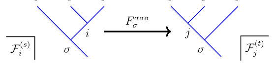
<figcaption class="paper-figure-caption"><b>Fig 1.</b> Figure 2: Fusion matrix F σσσ σ changes the decomposition of conformal blocks from the s-channel on the left to the t-channel on the right.</figcaption>
</figure>
<figure class="paper-figure-card">
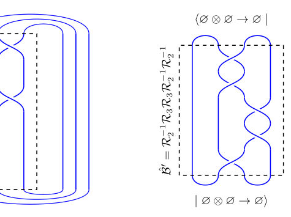
<figcaption class="paper-figure-caption"><b>Fig 2.</b> Figure 3: The 52 knot from the Rolfsen table in different representations.</figcaption>
</figure>
<figure class="paper-figure-card">
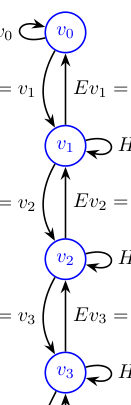
<figcaption class="paper-figure-caption"><b>Fig 3.</b> Figure 4: A highest-weight representation of the quantum algebra Uh(sl2). The relations to the left of the diagram are postulated, while those to the right are derived from the postulates.</figcaption>
</figure>
<figure class="paper-figure-card">
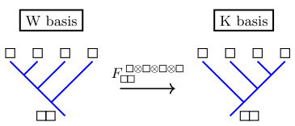
<figcaption class="paper-figure-caption"><b>Fig 4.</b> Figure 7: Action of F ⊗⊗⊗ transi- tion matrix.</figcaption>
</figure>
</div>
<p><strong>Summary.</strong> This theoretical work rigorously compares the algebraic structures of the Ising minimal model and the $SU(2)_2$ Chern-Simons theory. By analyzing tensor product decompositions and fusion rules, the authors resolve apparent mathematical contradictions, confirming that the two descriptions yield consistent physical observables for Ising anyons.</p>
<p><strong>Why it may be interesting.</strong> The deep connection between topological quantum field theories (Chern-Simons) and exactly solvable models (CFTs) is fundamental to understanding topological quantum computation, which is a key area of theoretical physics.</p>
<details>
<summary>Detailed structure</summary>
<p><strong>Main problem.</strong> The paper resolves apparent algebraic contradictions between the fusion/braiding rules of the Ising minimal model and the representation theory of the $SU(2)_2$ Chern-Simons theory.</p>
<p><strong>Main result.</strong> The tensor product decomposition rules for the quantum algebra $U_q(\mathfrak{sl}_2)$ at roots of unity successfully reproduce the known fusion and braiding rules of the Ising anyons, confirming the equivalence at the level of observables.</p>
<p><strong>Method.</strong> The authors compare results derived from two formalisms: Operator Product Expansions (OPEs) for the CFT side and the representation theory of the quantum group $U_q(\mathfrak{sl}_2)$ for the Chern-Simons side.</p>
<p><strong>Model / system.</strong> The study concerns the mathematical equivalence between the Ising minimal model $\mathcal{M}(4,3)$ (a 2D CFT with $c=1/2$) and the $SU(2)_2$ Chern-Simons theory, which describes Ising anyons.</p>
<p><strong>Key observables.</strong> Wilson loop expectation values $\langle W_K^R 
angle$, fusion matrices ($F$), and braiding matrices ($R$).</p>
<p><strong>Important parameters / regimes.</strong> The deformation parameter $q$ is set to a root of unity, specifically $q = \exp(\pi i/4)$.</p>
<p><strong>Assumptions / limitations.</strong> The comparison is restricted to low-degree tensor products, and the resolution of contradictions relies on the fact that representations with zero quantum dimension do not contribute to observable quantities.</p>
<p><strong>Figures summary.</strong> Figures illustrate the Ising fusion rules, the structure of the 52 knot in different closures, and the transition matrices ($F^{\otimes\otimes\otimes}$) governing tensor product decompositions.</p>
<p><strong>Paper structure.</strong> The paper proceeds by establishing the algebraic structures for both theories, calculating specific observables (like Wilson loops), and systematically comparing the tensor product decompositions ($\otimes^{\otimes\otimes\otimes}$) to show consistency.</p>
</details>
<details>
<summary>Abstract</summary>
<p>The present work is motivated by the statement that the Ising minimal model $\mathcal{M}(4,3)$ is equivalent, at the level of observables, to the $SU(2)_2$ Chern--Simons theory. At first glance, however, these two theories appear to differ substantially. For instance, the number of irreducible highest-weight representations does not match the number of Ising anyons. For tensor products of low degree, these discrepancies are examined in this work. While representation structure differs, it does not affect the observables underlying topological quantum computation algorithms.</p>
</details>
<p><sub><a href="#top">↑ back to top</a></sub></p>

<p><a id="paper-2605.16248"></a></p>
<h3 id="local-softmax-and-global-weights-in-non-boolean-event-structures"><a href="http://arxiv.org/abs/2605.16248v1">Local Softmax and Global Weights in Non-Boolean Event Structures</a></h3>
<p><strong>Authors:</strong> Karl Svozil<br>
<strong>Type:</strong> theory · <strong>Category:</strong> other · <strong>PDF:</strong> <a href="https://arxiv.org/pdf/2605.16248v1">https://arxiv.org/pdf/2605.16248v1</a><br>
<strong>Analysis basis:</strong> full PDF text, analyzed in chunks</p>
<div class="figure-strip-hint">↔ Scroll figures horizontally</div>
<div class="paper-figures-scroll">
<figure class="paper-figure-card">
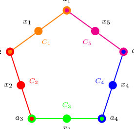
<figcaption class="paper-figure-caption"><b>Fig 1.</b> FIG. 1. Pentagon logic in the notation of Sec. VII. The cyclic atoms a1, . . . , a5 are intertwining atoms, each shared by two adjacent contexts. The atoms x1, . . . , x5 are context- specific. Each colored broken line represents one context Ci = {ai, ai+1, xi}, with indices understood modulo 5.</figcaption>
</figure>
</div>
<p><strong>Summary.</strong> This theoretical paper analyzes probability assignments on complex, overlapping logical structures called non-Boolean event structures. It shows that when local normalization rules, such as Softmax, are forced to be globally consistent across shared contexts, the rule merely parameterizes the set of all mathematically admissible weights. The key finding is that the interesting physics—the existence of weights beyond classical or quantum bounds—is determined by the structure itself, not the specific normalizing function used.</p>
<p><strong>Why it may be interesting.</strong> It provides a rigorous mathematical framework for understanding when local probabilistic assumptions (like those used in machine learning or cognitive models) are compatible with global physical constraints, separating the mathematical machinery (Softmax) from the underlying physical constraints (the polytope $W(L)$).</p>
<details>
<summary>Detailed structure</summary>
<p><strong>Main problem.</strong> The paper investigates the mathematical relationship between local normalization rules (like Softmax) applied in overlapping contexts and the requirement for a single, globally consistent probability weight in non-Boolean event structures.</p>
<p><strong>Main result.</strong> Imposing global consistency (single-valuedness) forces the generalized softmax rule to merely parameterize the set of admissible weights, demonstrating that the softmax function itself does not introduce new physics beyond the structural constraints of the event structure.</p>
<p><strong>Method.</strong> The authors use abstract algebraic and geometric methods to analyze the polytope of admissible weights, comparing local normalization schemes against global consistency requirements.</p>
<p><strong>Model / system.</strong> The model is a non-Boolean event structure $L=(A, M)$, where $A$ is a set of atoms and $M$ is a family of overlapping contexts. The analysis focuses on characterizing the set of admissible probability weights $W(L)$ within this structure.</p>
<p><strong>Key observables.</strong> Admissible weights $p \in W(L)$, the classical polytope $C(L)$, the quantum polytope $Q(L)$, and exotic weights that violate these bounds.</p>
<p><strong>Important parameters / regimes.</strong> The link function $g$ used in the generalized softmax, and the structure of the context overlaps, particularly odd cycles (e.g., $n=5$ pentagon).</p>
<p><strong>Assumptions / limitations.</strong> The core assumption is the requirement of single-valuedness or 'no-disturbance' across shared atoms, which restricts the general softmax framework.</p>
<p><strong>Figures summary.</strong> The figures illustrate the geometry of probability assignments on odd cycles (like the pentagon), showing how the admissible half-weight violates both classical and quantum bounds.</p>
<p><strong>Paper structure.</strong> The paper progresses by first defining the problem in terms of local vs. global normalization, then establishing the equivalence between single-valued softmax and parametrization of $W(L)$, and finally using odd cycles to demonstrate the existence of exotic, non-classical weights.</p>
</details>
<details>
<summary>Abstract</summary>
<p>Softmax and related normalized response functions are widely used in choice theory, machine learning, and cognitive science. In non-Boolean event structures with overlapping contexts, however, local normalization does not automatically yield a global probability weight. We show that imposing single-valuedness on shared atoms -- equivalently, no-disturbance or consistent connectedness -- collapses generalized softmax rules to coordinate parametrizations of the strictly positive part of the admissible-weight polytope. Any strictly positive admissible weight can be represented in this way, while boundary weights arise as limits. Exotic weights that exceed classical or quantum bounds are therefore properties of the event structure and the chosen weight, not of the normalizing link. The resulting hierarchy separates local normalization, cross-context gluing, Cauchy--Gleason linearity, and physical or cognitive realizability.</p>
</details>
<p><sub><a href="#top">↑ back to top</a></sub></p>

<p><a id="paper-2605.15447"></a></p>
<h3 id="multifractal-and-ergodic-properties-of-conductance-fluctuations-under-strong-disorder"><a href="http://arxiv.org/abs/2605.15447v1">Multifractal and Ergodic Properties of Conductance Fluctuations under Strong Disorder</a></h3>
<p><strong>Authors:</strong> Marcos A. A. de Sousa, Heitor R. Publio, Henrique A. de Lima, Adauto J. F. de Souza, Fernando A. Oliveira, Anderson L. R. Barbosa<br>
<strong>Type:</strong> theory · <strong>Category:</strong> disordered systems and neural networks · <strong>PDF:</strong> <a href="https://arxiv.org/pdf/2605.15447v1">https://arxiv.org/pdf/2605.15447v1</a><br>
<strong>Analysis basis:</strong> full PDF text, analyzed in chunks</p>
<div class="figure-strip-hint">↔ Scroll figures horizontally</div>
<div class="paper-figures-scroll">
<figure class="paper-figure-card">
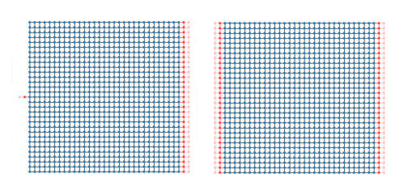
<figcaption class="paper-figure-caption"><b>Fig 1.</b> FIG. 1. Mesoscopic two-dimensional sample (in blue) con- nected to asymmetric (on the left) and symmetric (on the right) leads (in red) while being subjected to strong disorder. Both samples have dimensions of 61a × 61a, where a is the lattice constant.</figcaption>
</figure>
<figure class="paper-figure-card">
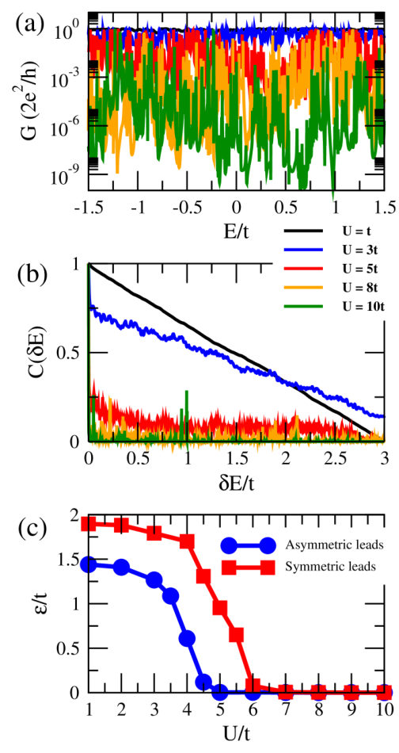
<figcaption class="paper-figure-caption"><b>Fig 2.</b> FIG. 2. Panel (a) shows the conductance as a function of the Fermi energy E from a 2D sample with asymmetric leads for different values of disorder U, as illustrated in Figure 1. Panel (b) shows the conductance correlation C(δE) calculated from the conductance fictitious time series as illustrated in panel (a). Panel (c) shows the fictitious correlation time ϵ as a function of disorder U for a 2D sample connected to asymmetric (circle symbols) and symmetric (square symbols) leads.</figcaption>
</figure>
<figure class="paper-figure-card">
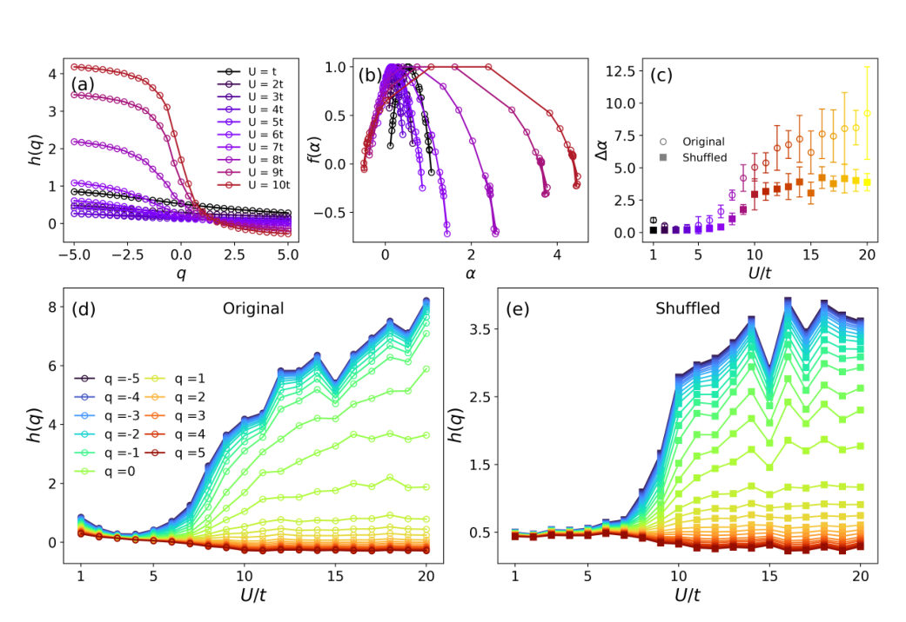
<figcaption class="paper-figure-caption"><b>Fig 3.</b> FIG. 3. Panel (a) presents the generalized Hurst exponents, h(q), and panel (b) shows the multifractal singularity spectra, f(α), for the conductance time series of a 2D sample with asymmetric leads, as illustrated in Figure 2, at various disorder values U. Panel (c) plots the width ∆α = αmax −αmin, derived from panel (b), as a function of U for original (circle symbols) and shuffled (square symbols) time series. Panel (d) shows h(q) versus U, and panel (e) shows the Hurst exponent from shuffled time series as a function of U.</figcaption>
</figure>
<figure class="paper-figure-card">
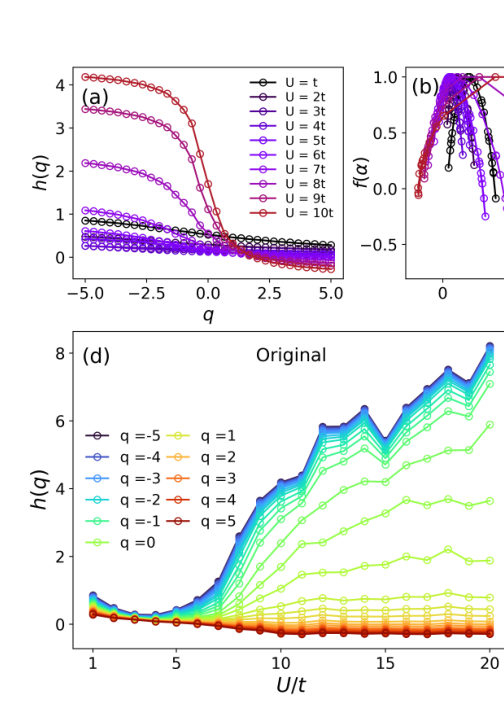
<figcaption class="paper-figure-caption"><b>Fig 4.</b> Figure 3(a) shows the Hurst exponent average h(q) as a function of q calculated from Eq. 5, for various disorder values U. At U = t, the Hurst exponent demonstrates a significant dependence on q, indicating clear multifrac- tality in the conductance time series. As the disorder in- creases, the energy correlation length decreases, leading to h(q) becoming independent of q. This trend indicates that the conductance time series tend to be monofractal. These results agree with Refs. [6, 7]. In contrast, for U &gt; 5t, where ϵ →0, h(q) begins to change with q, sig- nifying a return to multifractality. This behavior is more evident when plotting the Hurst exponent as a function of disorder U, as...</figcaption>
</figure>
<figure class="paper-figure-card">
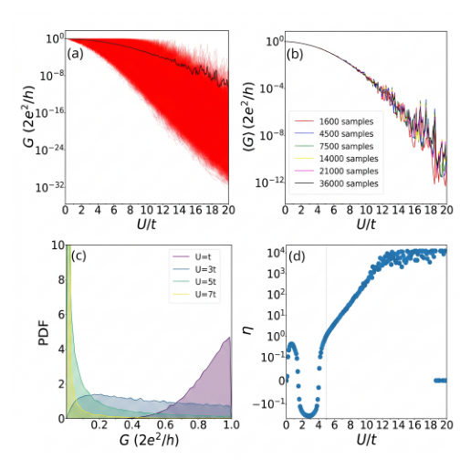
<figcaption class="paper-figure-caption"><b>Fig 5.</b> FIG. 4. Panel (a) illustrates the conductance as a function of disorder U for 36,000 different 2D samples with asymmet- ric leads, represented by the red dotted lines. The black line depicts the average conductance across these 36,000 samples. Panel (b) presents the average conductance calculated from varying numbers of samples. Panel (c) shows the probabil- ity distribution function (PDF) of conductance for different values of U. Panel (d) displays the non-Gaussian term η, as defined in Eq. 8, as a function of U.</figcaption>
</figure>
</div>
<p><strong>Summary.</strong> This work analyzes how conductance fluctuations behave in disordered quantum conductors by examining their multifractal and ergodic properties. It finds a clear transition from non-ergodic to ergodic dynamics as disorder increases. Crucially, it distinguishes the physical origin of multifractality, showing it stems from temporal correlations in the weak disorder limit and from non-Gaussian probability distributions in the strong disorder limit.</p>
<p><strong>Why it may be interesting.</strong> The findings provide a detailed understanding of how fundamental concepts like ergodicity and multifractality manifest in quantum transport, offering insights into the role of rare events and non-Gaussian statistics in disordered quantum systems.</p>
<details>
<summary>Detailed structure</summary>
<p><strong>Main problem.</strong> The study investigates the multifractal and ergodic properties of conductance fluctuations in disordered mesoscopic systems.</p>
<p><strong>Main result.</strong> The system undergoes a transition from non-ergodic to ergodic behavior as disorder increases, with multifractality arising from temporal correlations in the non-ergodic regime and non-Gaussian PDF effects in the ergodic regime.</p>
<p><strong>Method.</strong> The analysis employs Multifractal Detrended Fluctuation Analysis (MF-DFA) on a fictitious time series of conductance, comparing results with shuffled time series to distinguish correlation sources.</p>
<p><strong>Model / system.</strong> The model is a two-dimensional (2D) tight-binding lattice subjected to Anderson disorder via on-site potentials. Transport is analyzed through the conductance, calculated using the Landauer-Büttiker formalism.</p>
<p><strong>Key observables.</strong> Conductance correlation function, generalized Hurst exponent h(q), singularity spectrum f(alpha), fictitious correlation time $\epsilon$, and non-Gaussian indicator $\eta$.</p>
<p><strong>Important parameters / regimes.</strong> Disorder strength ($U$), which controls the transition between non-ergodic and ergodic regimes.</p>
<p><strong>Assumptions / limitations.</strong> The analysis treats conductance as a function of a control parameter (like Fermi energy) to generate a time series for fluctuation analysis.</p>
<p><strong>Figures summary.</strong> Figures illustrate the transition from non-ergodic to ergodic behavior via correlation function decay, and show how multifractal scaling parameters ($\Delta\alpha$, $h(q)$) change with disorder strength $U$ for both original and shuffled time series.</p>
<p><strong>Paper structure.</strong> The paper systematically analyzes the conductance fluctuations by first establishing the physical model and observables, then applying multifractal analysis to characterize the scaling properties in different disorder regimes, culminating in a discussion of the physical origin of the observed multifractality.</p>
</details>
<details>
<summary>Abstract</summary>
<p>Understanding the stochastic properties of conductance fluctuations in disordered mesoscopic systems is fundamental to quantum transport. In this work, we investigate the multifractal and ergodic properties of the fictitious time series of conductance in two-dimensional tight-binding models under varying Anderson disorder. Using standard multifractal analysis, we show that conductance fluctuations exhibit a transition from non-ergodic to ergodic behavior as the disorder strength increases, as evidenced by the decay of the conductance correlation function. Remarkably, multifractality persists in both regimes; however, it becomes insensitive to shuffling in the strong-disorder (ergodic) regime, suggesting that distributional effects dominate temporal organization. On the contrary, in the weakly disordered (non-ergodic) regime, long-range correlations play a significant role. These findings are robust against changes in lead geometry (asymmetric vs. symmetric). Our results provide new insights into the interplay between ergodicity, multifractality, and rare events in disordered quantum transport.</p>
</details>
<p><sub><a href="#top">↑ back to top</a></sub></p>

<p><a id="paper-2605.15703"></a></p>
<h3 id="observation-of-flat-bottom-u-shaped-energy-gap-in-high-tc-nickelate-lapr3ni2o7-thin-films"><a href="http://arxiv.org/abs/2605.15703v1">Observation of flat-bottom U-shaped energy gap in high-Tc nickelate (La,Pr)3Ni2O7 thin films</a></h3>
<p><strong>Authors:</strong> Zhen Liang, Tianheng Wei, Wei Ren, Haoran Ji, Zheyuan Xie, Yanzhao Liu, Ziqiang Wang, Jian Wang<br>
<strong>Type:</strong> experiment · <strong>Category:</strong> strongly correlated electrons · <strong>PDF:</strong> <a href="https://arxiv.org/pdf/2605.15703v1">https://arxiv.org/pdf/2605.15703v1</a><br>
<strong>Analysis basis:</strong> full PDF text, analyzed in chunks</p>
<div class="figure-strip-hint">↔ Scroll figures horizontally</div>
<div class="paper-figures-scroll">
<figure class="paper-figure-card">
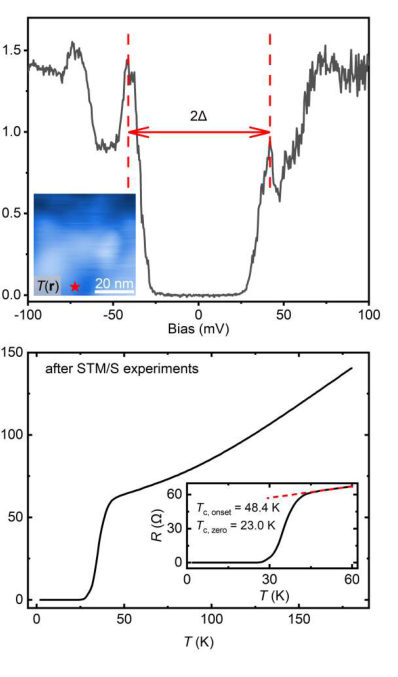
<figcaption class="paper-figure-caption"><b>Fig 1.</b> Fig. 1 | SC nickelate (La,Pr)3Ni2O7 thin film grown on SrLaAlO4 substrate. a, The schematic of the (La,Pr)3Ni2O7 crystal structure. b, The R-T curve of the (La,Pr)3Ni2O7 thin film measured before STM/S experiments. The onset SC Tc is 46.3 K and the zero resistance Tc is 21.7 K. The inset shows the measurement configuration. c, A typical tunneling spectrum measured at the position marked by the red star in the inset (Vs = 100 mV, Is = 500 pA, Vmod = 2 mV, T = 60 mK). The gap size (Δ) is around 41.6 meV determined by one half of the separation in energy between the two coherence peaks. The inset shows an STM topographic image of the (La,Pr)3Ni2O7 thin film in Region 1 (52.25 × 52.25 nm2, Vs =...</figcaption>
</figure>
<figure class="paper-figure-card">
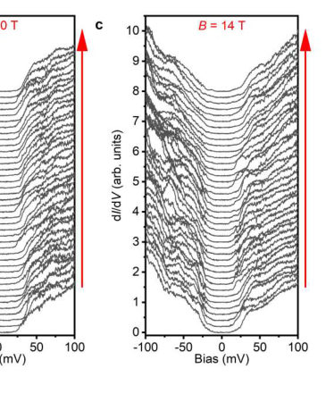
<figcaption class="paper-figure-caption"><b>Fig 2.</b> Fig. 2 | U-shaped energy gap structure and reduction of the energy gap under magnetic field B = 14 T perpendicular to sample surface. a, A topographic image of the (La,Pr)3Ni2O7 thin film in Region 1 (77.71 × 77.71 nm2, Vs = 8 V, Is = 100 pA). b, The tunneling conductance spectra measured along the red arrow shown in a without magnetic field (Vs = 100 mV, Is = 500 pA, Vmod = 2 mV, T = 50 mK). The spectra are vertically shifted for clarity. c, The tunneling spectra measured along the same arrow in a under a magnetic field B = 14 T perpendicular to the surface (Vs = 100 mV, Is = 500 pA, Vmod = 2mV, T = 50 mK). The spectra are vertically shifted for clarity. d, The spatially average of the...</figcaption>
</figure>
<figure class="paper-figure-card">
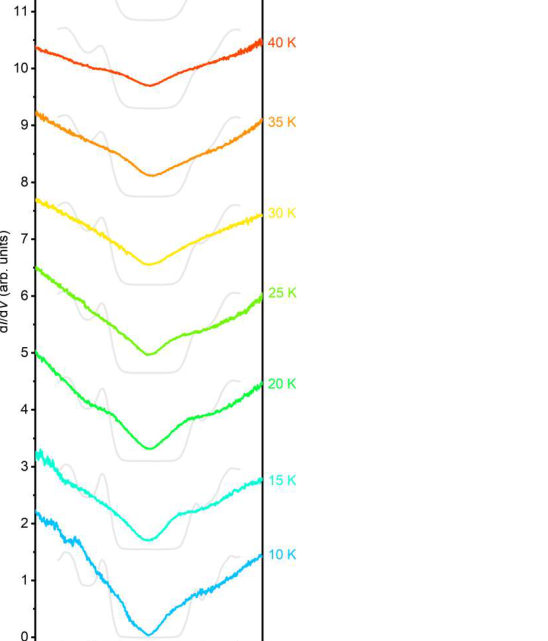
<figcaption class="paper-figure-caption"><b>Fig 3.</b> Fig. 3 | Tunneling spectra measured at different temperatures. a, The temperature dependence of the tunneling spectra from 60 mK to 45 K measured at the position marked by the red star in Fig.1c (Vs = 100 mV, Is = 500 pA, Vmod = 2 mV). b-c, The same spectra in a vertically shifted for clarity. The spectra measured from 60 mK to 7 K, from 10 K to 45 K are shown in b, c, respectively. The gray spectra are obtained by convoluting the spectrum measured at 60 mK by the thermal broadening functions at the corresponding temperatures. Furthermore, our observations were also repeated in another three-unit-cell thick (La,Pr)3Ni2O7 thin film, with a similar La:Pr ratio of about 1.95:1.05, grown on the...</figcaption>
</figure>
</div>
<p><strong>Summary.</strong> This work reports the first observation of a distinct, flat-bottom U-shaped energy gap in high-Tc nickelate thin films using STM/S. By analyzing the gap's temperature and magnetic field dependence, the authors argue that the material exhibits unconventional, strong-coupling superconductivity with a large gap, suggesting potential for high critical temperatures at ambient pressure.</p>
<p><strong>Why it may be interesting.</strong> The observation of a large, unconventional superconducting gap ($\Delta$) and the strong-coupling ratio ($\gg$ BCS limit) in a nickelate system provides crucial experimental data for theories attempting to explain high-Tc superconductivity beyond the cuprate paradigm.</p>
<details>
<summary>Detailed structure</summary>
<p><strong>Main problem.</strong> The study aims to understand the underlying mechanism of high-Tc superconductivity in nickelate superconductors and characterize the nature of the superconducting energy gap.</p>
<p><strong>Main result.</strong> The researchers reported the first observation of an energy-symmetric, flat-bottom U-shaped gap in the nickelate film, whose temperature and magnetic field dependence is consistent with a superconducting gap function.</p>
<p><strong>Method.</strong> The study employed ultra-low temperature Scanning Tunneling Microscopy/Spectroscopy (STM/S) and electrical transport measurements on the thin films.</p>
<p><strong>Model / system.</strong> The physical system is (La,Pr)3Ni2O7 thin films grown on a SrLaAlO4 substrate. The analysis probes the superconducting gap structure, which is compared against theoretical expectations for strong-coupling superconductivity.</p>
<p><strong>Key observables.</strong> Energy-symmetric, flat-bottom U-shaped energy gap; zero residual density of states at the Fermi level; gap reduction under a c-axis magnetic field; U-shaped to V-shaped gap evolution with temperature.</p>
<p><strong>Important parameters / regimes.</strong> Onset $T_c$ above 40 K; Gap size $\Delta \sim 41.6 	ext{ meV}$; Strong-coupling ratio $2\Delta/k_B T_c \approx 20$; Magnetic field $B = 14 	ext{ T}$.</p>
<p><strong>Assumptions / limitations.</strong> The observed gap structure is assumed to be superconducting, ruling out alternative origins like Coulomb blockade, and the analysis relies on careful deconvolution of thermal broadening effects.</p>
<p><strong>Figures summary.</strong> Figures illustrate the U-shaped gap structure, its suppression by a perpendicular magnetic field, and the temperature evolution from U-shaped to V-shaped spectra.</p>
<p><strong>Paper structure.</strong> The paper progresses by first establishing the superconducting transport properties, then using STM/S to observe the characteristic U-shaped gap at low temperatures, followed by analyzing the gap's evolution with temperature and magnetic field, and finally comparing the results to theoretical models of strong-coupling superconductivity.</p>
</details>
<details>
<summary>Abstract</summary>
<p>The discovery of high transition temperature (high-Tc) superconductivity in Ruddlesden-Popper (R-P) bilayer nickelates under high pressure has stimulated extensive work to understand the underlying mechanism and search for superconductors with higher Tc. The recent realization of superconductivity in R-P bilayer nickelate thin films with onset Tc above 40 K at ambient-pressure enables the use of a wide array of powerful experimental tools to investigate the unconventional high-Tc superconductivity in bilayer nickelates. Here, using ultra-low temperature scanning tunneling microscopy/spectroscopy (STM/S) and electrical transport study, we report the first successful observation of an energy-symmetric, flat-bottom U-shaped gap with zero residual density of states around the Fermi level in the high-Tc nickelate (La,Pr)3Ni2O7 thin film grown on SrLaAlO4 substrate. Before and after STM/S studies, transport measurements on the same sample reveal consistent superconducting behaviors showing zero resistance, with an onset Tc above 40 K and zero resistance Tc above 20 K. The tunneling spectra exhibit highly unconventional temperature evolution, characterized by a rapid filling of the U-shaped energy gap to a V-shaped gap as the temperature increases. Furthermore, the U-shaped energy gap is reduced under a c-axis magnetic field of 14 T. The energy-symmetric U-shaped gap, taken together with its dependence on magnetic field and temperature, is consistent with the behavior of a superconducting gap, suggesting a nodeless gap function at ultra-low temperatures. Our findings shed new lights on the nature of high-Tc superconductivity and provide an encouraging and thought-provoking hint for a local superconductivity with Tc above liquid nitrogen boiling temperature in nickelate superconductors at ambient or zero pressure.</p>
</details>
<p><sub><a href="#top">↑ back to top</a></sub></p>

<p><a id="paper-2605.15372"></a></p>
<h3 id="orthogonal-polynomials-and-the-macwilliams-transform-for-permutation-invariant-qudit-codes"><a href="http://arxiv.org/abs/2605.15372v1">Orthogonal Polynomials and the MacWilliams Transform for Permutation-Invariant Qudit Codes</a></h3>
<p><strong>Authors:</strong> Ian Teixeira<br>
<strong>Type:</strong> theory · <strong>Category:</strong> quantum information and computing · <strong>PDF:</strong> <a href="https://arxiv.org/pdf/2605.15372v1">https://arxiv.org/pdf/2605.15372v1</a><br>
<strong>Analysis basis:</strong> full PDF text, analyzed in chunks</p>
<div class="figure-strip-hint">↔ Scroll figures horizontally</div>
<div class="paper-figures-scroll">
<figure class="paper-figure-card">
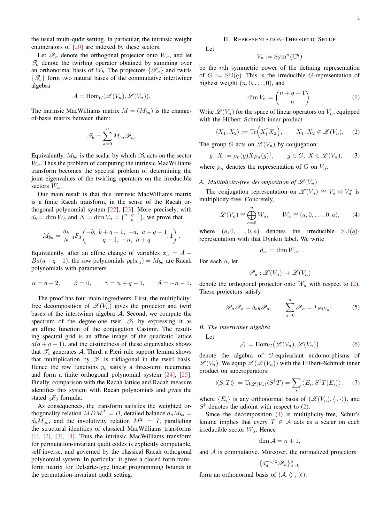
<figcaption class="paper-figure-caption"><b>Fig 1.</b> Low-resolution page preview, page 2</figcaption>
</figure>
<figure class="paper-figure-card">
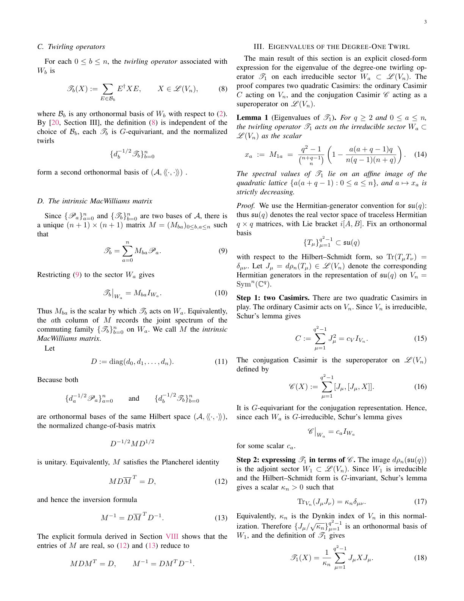
<figcaption class="paper-figure-caption"><b>Fig 2.</b> Low-resolution page preview, page 3</figcaption>
</figure>
<figure class="paper-figure-card">
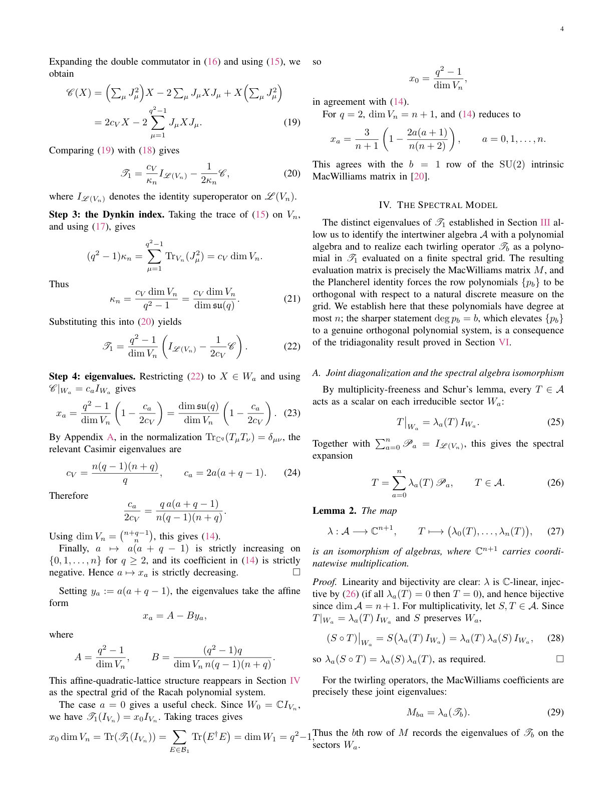
<figcaption class="paper-figure-caption"><b>Fig 3.</b> Low-resolution page preview, page 4</figcaption>
</figure>
<figure class="paper-figure-card">
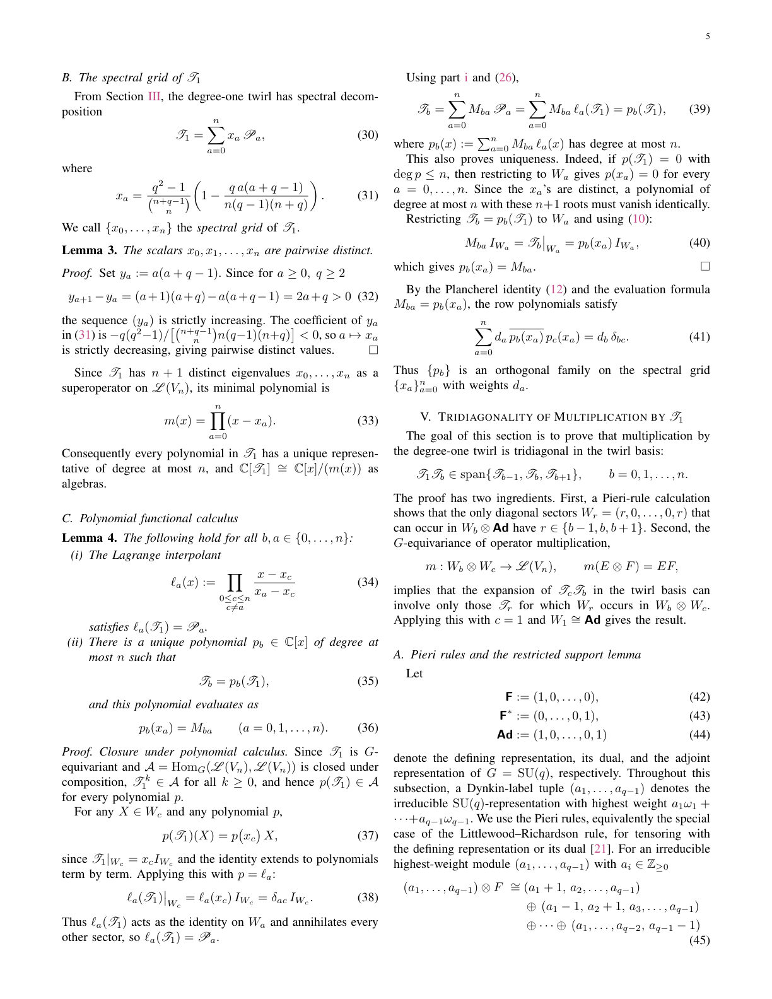
<figcaption class="paper-figure-caption"><b>Fig 4.</b> Low-resolution page preview, page 5</figcaption>
</figure>
<figure class="paper-figure-card">
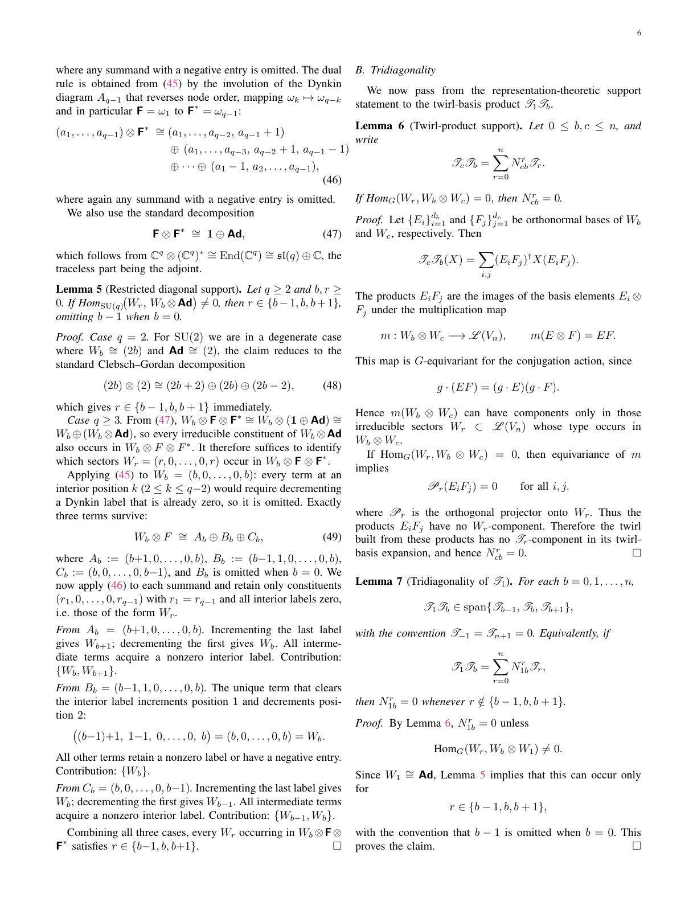
<figcaption class="paper-figure-caption"><b>Fig 5.</b> Low-resolution page preview, page 6</figcaption>
</figure>
</div>
<p><strong>Summary.</strong> This theoretical paper derives the intrinsic MacWilliams transform for a specific class of quantum error-correcting codes (permutation-invariant qudit codes). It achieves this by mapping the problem onto the spectral theory of operators acting on symmetric tensor representations of SU(q). The main result is an explicit formula for the transform matrix, showing it is a finite Racah transform, which is crucial for establishing rigorous bounds on the code's performance.</p>
<p><strong>Why it may be interesting.</strong> The deep connection between quantum error-correcting codes (qudit codes) and advanced mathematical structures like Racah polynomials and orthogonal polynomials provides powerful, explicit tools for bounding code performance.</p>
<details>
<summary>Detailed structure</summary>
<p><strong>Main problem.</strong> The paper aims to derive an explicit formula for the intrinsic MacWilliams transform associated with permutation-invariant qudit codes.</p>
<p><strong>Main result.</strong> The intrinsic MacWilliams matrix is shown to be a finite Racah transform, providing an explicit, closed-form matrix for computing linear programming bounds on these codes.</p>
<p><strong>Method.</strong> The derivation heavily utilizes representation theory, relating the transform to the joint eigenvalues of twirling operators acting on symmetric power representations of SU(q).</p>
<p><strong>Model / system.</strong> The system studied is permutation-invariant qudit codes, whose underlying structure is analyzed using the symmetric power representation $V_n = 	ext{Sym}^n(\mathbb{C}^q)$ of the group SU(q).</p>
<p><strong>Key observables.</strong> The intrinsic MacWilliams matrix $M = (M_{ba})$, the spectrum of the degree-one twirl operator $T_1$, and the associated Racah orthogonal polynomials.</p>
<p><strong>Important parameters / regimes.</strong> The qudit dimension $q$, the block length $n$, and the indices $a, b$ corresponding to irreducible sectors.</p>
<p><strong>Assumptions / limitations.</strong> The analysis relies on the multiplicity-free decomposition of the operator space $\mathcal{L}(V_n)$ and the properties derived from Casimir operators in the su(q) algebra.</p>
<p><strong>Paper structure.</strong> The paper proceeds by establishing the spectral decomposition of the twirling operators, proving that the resulting polynomial representatives form an orthogonal system, identifying this system with Racah polynomials, and finally deriving the explicit matrix elements and proving structural identities like orthogonality and involutivity.</p>
</details>
<details>
<summary>Abstract</summary>
<p>We derive an explicit formula for the intrinsic MacWilliams transform for permutation-invariant qudit codes. Such codes naturally live in symmetric power representations, where the relevant error sectors are determined by the irreducible decomposition of the conjugation action on the associated operator space. Using the multiplicity-free structure of this decomposition and the corresponding intertwiner algebra, we identify the intrinsic MacWilliams matrix with a finite Racah transform. The entries are given by a terminating hypergeometric series, and the rows of the matrix are Racah orthogonal polynomials with parameters determined explicitly by the block length and local dimension. Computing the spectrum of the degree-one twirl reveals that this spectrum lies on an affine quadratic lattice. Then we derive a tridiagonal multiplication rule from the representation theory of the adjoint sector. As consequences, we obtain closed-form orthogonality, detailed-balance, and involutivity identities for the transform. The resulting formula supplies an explicit MacWilliams matrix for computing linear programming bounds on permutation-invariant qudit codes.</p>
</details>
<p><sub><a href="#top">↑ back to top</a></sub></p>

<p><a id="paper-2605.16202"></a></p>
<h3 id="performance-gains-in-quantum-sat-solvers-using-esop-encoding"><a href="http://arxiv.org/abs/2605.16202v1">Performance Gains in Quantum SAT Solvers Using ESOP Encoding</a></h3>
<p><strong>Authors:</strong> Majd Assaad, Abhoy Kole, Rolf Drechsler<br>
<strong>Type:</strong> theory · <strong>Category:</strong> quantum information and computing · <strong>PDF:</strong> <a href="https://arxiv.org/pdf/2605.16202v1">https://arxiv.org/pdf/2605.16202v1</a><br>
<strong>Analysis basis:</strong> full PDF text, analyzed in chunks</p>
<div class="figure-strip-hint">↔ Scroll figures horizontally</div>
<div class="paper-figures-scroll">
<figure class="paper-figure-card">
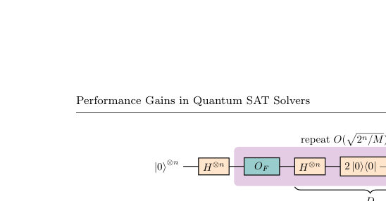
<figcaption class="paper-figure-caption"><b>Fig 1.</b> Fig. 1: Schematic overview of Grover’s algorithm for SAT, showing a single Grover iteration composed of the phase oracle OF and the diffusion operator D, repeated O( p</figcaption>
</figure>
<figure class="paper-figure-card">
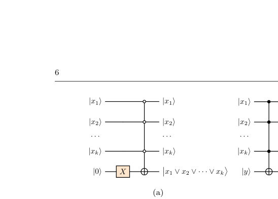
<figcaption class="paper-figure-caption"><b>Fig 2.</b> Fig. 2: Realization of (a) a CNF clause x1 ∨x2 ∨· · · ∨xk using input negation and a negative-k-controlled Toffoli gate, and (b) an ESOP product term implementing y ⊕(x1 ∧x2 ∧· · · ∧xk) using a positive-k-controlled Toffoli gate.</figcaption>
</figure>
<figure class="paper-figure-card">
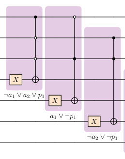
<figcaption class="paper-figure-caption"><b>Fig 3.</b> Fig. 4: Quantum circuit representation of proposition p1 ⇔a1 ∧¬a2 based on conventional CNF interpretation using three ancilla qubits, three Pauli X gates, and a pair of C2X and C3X gates with some controls of negative polarity.</figcaption>
</figure>
<figure class="paper-figure-card">
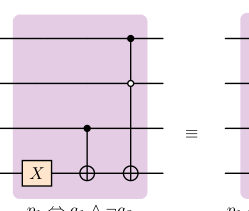
<figcaption class="paper-figure-caption"><b>Fig 4.</b> Fig. 5: Quantum circuit representations of proposition p1 ⇔a1 ∧¬a2 based on e-CNF interpretation using either (a) a Pauli X gate, a CX gate, and a C2X gate or (b) a CX gate, and a C2X gate with some controls of negative polarity.</figcaption>
</figure>
<figure class="paper-figure-card">
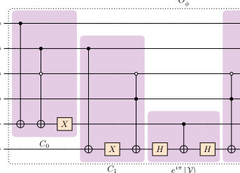
<figcaption class="paper-figure-caption"><b>Fig 5.</b> Fig. 6: Quantum oracle circuits synthesized using Algorithm 1: (a) oracle Obϕ cor-</figcaption>
</figure>
</div>
<p><strong>Summary.</strong> This work proposes using an Exclusive-Sum-of-Products (e-CNF) encoding to represent SAT problems for quantum computation. By replacing standard CNF, the e-CNF approach significantly reduces the required quantum resources, such as qubits and non-Clifford gates. This establishes e-CNF as a quantum-aware encoding that improves the feasibility of oracle-based quantum SAT solving.</p>
<p><strong>Why it may be interesting.</strong> While focused on SAT, the methodology of optimizing quantum circuit resource overhead by choosing a mathematically superior encoding structure (e-CNF) is highly relevant to designing practical quantum algorithms for complex computational problems.</p>
<details>
<summary>Detailed structure</summary>
<p><strong>Main problem.</strong> The paper addresses the challenge of efficiently encoding the NP-complete Boolean Satisfiability (SAT) problem for quantum acceleration using Grover's algorithm.</p>
<p><strong>Main result.</strong> The proposed Exclusive-Sum-of-Products (e-CNF) encoding significantly reduces quantum resource requirements (qubit count, T-gate complexity) compared to standard Conjunctive Normal Form (CNF) encodings.</p>
<p><strong>Method.</strong> The authors derive theoretical bounds and implement a systematic transformation from Boolean formulas to e-CNF, which is then mapped onto reversible quantum circuits for the oracle construction.</p>
<p><strong>Model / system.</strong> The model is quantum computation, specifically utilizing Grover's search algorithm. The quantum operations are analyzed using the Clifford+T gate set, focusing on the resource cost of constructing the phase oracle.</p>
<p><strong>Key observables.</strong> Quantum resource efficiency, including qubit count (#q), T-gate complexity (#T), CNOT count (#CX), and circuit depth (#D).</p>
<p><strong>Important parameters / regimes.</strong> The complexity scales with the number of clauses ($m$) and the structure of the logical equivalence constraints being encoded.</p>
<p><strong>Assumptions / limitations.</strong> The performance of the quantum solver is dominated by the cost of constructing the quantum oracle, and the analysis relies on decomposing multi-controlled gates into the Clifford+T gate set.</p>
<p><strong>Figures summary.</strong> Figures illustrate the schematic overview of Grover's algorithm and provide quantum circuit representations comparing the oracle construction for CNF versus e-CNF for sample equivalences.</p>
<p><strong>Paper structure.</strong> The paper introduces the SAT problem and Grover's algorithm, contrasts the resource costs of CNF vs. e-CNF encodings, derives the e-CNF transformation, and concludes with experimental benchmarks demonstrating resource savings.</p>
</details>
<details>
<summary>Abstract</summary>
<p>The Boolean Satisfiability (SAT) problem is a canonical NP-complete problem and a natural candidate for quantum acceleration via search-based algorithms. In Grover-based quantum SAT solvers, the dominant computational cost stems from the construction of a reversible oracle that evaluates the Boolean formula, rendering the choice of SAT encoding crucial for overall quantum resource efficiency. Although SAT instances are conventionally expressed in Conjunctive Normal Form (CNF), such encodings typically translate into quantum circuits with significant qubit overhead and high non-Clifford gate complexity.   In this work, we investigate an Exclusive-Sum-of-Products (ESOP)-based CNF (e-CNF) representation tailored for quantum SAT solving and analyze its impact on oracle construction. We derive tighter upper bounds on qubit requirements and Clifford+$T$ gate counts for Grover-based SAT solvers when e-CNF encodings are employed in place of standard CNF. In addition, we propose a scalable transformation from Boolean formulas to e-CNF and present a systematic procedure for interpreting e-CNF representations as reversible quantum circuits suitable for oracle implementation. Experimental evaluation on representative SAT benchmarks demonstrates that the proposed e-CNF-based approach yields substantial and consistent reductions in quantum resources, including qubit count, T-gate complexity, and circuit depth, when compared to CNF-based oracle constructions. These results establish e-CNF as an effective quantum-aware SAT encoding that significantly improves the practicality of oracle-based quantum SAT solving.</p>
</details>
<p><sub><a href="#top">↑ back to top</a></sub></p>

<p><a id="paper-2605.15476"></a></p>
<h3 id="quantum-circuit-synthesis-using-an-exact-t-library"><a href="http://arxiv.org/abs/2605.15476v1">Quantum Circuit Synthesis Using an Exact T Library</a></h3>
<p><strong>Authors:</strong> Hanyu Wang, Mingfei Yu, Xinrui Wu, Jason Cong<br>
<strong>Type:</strong> theory · <strong>Category:</strong> quantum information and computing · <strong>PDF:</strong> <a href="https://arxiv.org/pdf/2605.15476v1">https://arxiv.org/pdf/2605.15476v1</a><br>
<strong>Analysis basis:</strong> full PDF text, analyzed in chunks</p>
<div class="figure-strip-hint">↔ Scroll figures horizontally</div>
<div class="paper-figures-scroll">
<figure class="paper-figure-card">
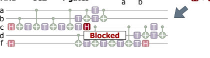
<figcaption class="paper-figure-caption"><b>Fig 1.</b> Figure 1: Example of the same AND count results in different T costs. Although both functions A and B contain two ANDs, the two Ts in A can be merged, while a Hadamard blocks those in B.</figcaption>
</figure>
<figure class="paper-figure-card">
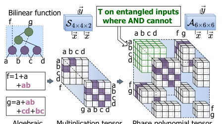
<figcaption class="paper-figure-caption"><b>Fig 2.</b> Figure 3: Tensor representation for bilinear Boolean functions. We present an example with a function with 𝑛= 4 inputs and 𝑚= 2 outputs. Algebraic normal form (ANF) is derived according to Equa- tion (1). Compared to the classical multiplication tensor, the phase polynomial tensor incorporates the entries that entangle inputs and outputs (highlighted in green). T can operate in this highlighted corner, where a classical bilinear operator cannot.</figcaption>
</figure>
<figure class="paper-figure-card">
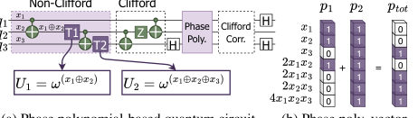
<figcaption class="paper-figure-caption"><b>Fig 3.</b> Figure 2: A circuit with two Ts (𝑇1, 𝑇2) and two representations of the phase shift on |𝑥1𝑥2𝑥3⟩: (a) phase polynomial and its (b) vector form.</figcaption>
</figure>
<figure class="paper-figure-card">
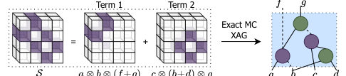
<figcaption class="paper-figure-caption"><b>Fig 4.</b> Figure 4: Example of a multiplication tensor. The MC is given by the number of terms to decompose the tensor S. Here MC = 2.</figcaption>
</figure>
<figure class="paper-figure-card">
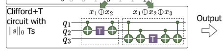
<figcaption class="paper-figure-caption"><b>Fig 5.</b> Figure 5: Exact T synthesis example. The solver finds 𝑠with mini- mum ∥𝑠∥0 satisfying Φ · 𝑠= 𝑝𝑓(mod 2), where Φ maps parities to monomials. Selected vectors are highlighted in green.</figcaption>
</figure>
</div>
<p><strong>Summary.</strong> This paper presents a novel, quantum-aware approach to synthesizing quantum circuits by accurately calculating the minimum required T gate count. It overcomes the limitations of previous methods that used simple proxies for cost by formulating the problem exactly using phase polynomials. The resulting customized mapper significantly reduces the T gate count for critical quantum applications.</p>
<p><strong>Why it may be interesting.</strong> While focused on digital quantum computation, the rigorous mathematical framework for minimizing non-Clifford resources (T gates) by analyzing underlying algebraic structures (phase polynomials) is highly relevant to understanding resource constraints in any complex quantum system.</p>
<details>
<summary>Detailed structure</summary>
<p><strong>Main problem.</strong> The primary challenge is minimizing the T gate count during fault-tolerant quantum circuit synthesis, as T gates are the dominant resource bottleneck in quantum error correction.</p>
<p><strong>Main result.</strong> The proposed method achieves significant T count reductions (up to 14.3% on EPFL benchmarks and 40% for cryptographic modules) by using an exact T cost model instead of inaccurate proxies like AND count.</p>
<p><strong>Method.</strong> The authors formulate an exact T synthesis problem, canonicalize Boolean functions under Clifford equivalence, and develop a customized mapper that integrates this quantum-aware cost model into the standard XAG synthesis flow.</p>
<p><strong>Model / system.</strong> The work models quantum circuits implementing Boolean functions, specifically focusing on bilinear functions, and utilizes the phase polynomial representation to capture the exact non-Clifford (T gate) cost.</p>
<p><strong>Key observables.</strong> T count (the primary cost metric), AND count/Multiplicative Complexity (the inaccurate proxy), and the phase polynomial vector.</p>
<p><strong>Important parameters / regimes.</strong> The maximum number of variables supported for precomputation is seven; the complexity is related to the rank of the multiplication tensor.</p>
<p><strong>Assumptions / limitations.</strong> Existing methods incorrectly assume that the AND count is a reliable proxy for the true T gate cost, which the paper refutes.</p>
<p><strong>Figures summary.</strong> Figures compare T-count reductions across arithmetic benchmarks (e.g., GF(2^n) multipliers) using the new mapper versus prior state-of-the-art methods, and detail the structure of the synthesis flow and cost analysis.</p>
<p><strong>Paper structure.</strong> The paper progresses from identifying the T-gate bottleneck, detailing the mathematical formulation of the exact T synthesis problem via phase polynomials, proposing the customized mapper that respects bilinear structure, and finally demonstrating the end-to-end synthesis flow and performance gains.</p>
</details>
<details>
<summary>Abstract</summary>
<p>In fault-tolerant quantum circuit synthesis, T gates supplied via magic states dominate space-time cost, while Clifford gates incur negligible overhead. Conventional flows minimize AND count in an {XOR, AND, NOT} basis as a proxy for T, which neglects phase cancellation and can be far from T-optimal. We instead formulate an exact T synthesis problem and canonicalize Boolean functions under Clifford equivalence. By precomputing T-optimal implementations up to seven variables and developing a customized mapper, we reduce the T count by up to 14.3% on EPFL benchmarks and improve the T counts of several cryptographic modules by up to 40%.</p>
</details>
<p><sub><a href="#top">↑ back to top</a></sub></p>

<p><a id="paper-2605.16044"></a></p>
<h3 id="quantum-feature-amplification-network-qfan-as-an-autoregressive-quantum-generative-model"><a href="http://arxiv.org/abs/2605.16044v1">Quantum Feature Amplification Network (QFAN) as An Autoregressive Quantum Generative Model</a></h3>
<p><strong>Authors:</strong> Jamal Slim, Saverio Monaco, Florian Rehm, Dirk Kruecker, Kerstin Borras<br>
<strong>Type:</strong> both · <strong>Category:</strong> quantum information and computing · <strong>PDF:</strong> <a href="https://arxiv.org/pdf/2605.16044v1">https://arxiv.org/pdf/2605.16044v1</a><br>
<strong>Analysis basis:</strong> full PDF text, analyzed in chunks</p>
<div class="figure-strip-hint">↔ Scroll figures horizontally</div>
<div class="paper-figures-scroll">
<figure class="paper-figure-card">
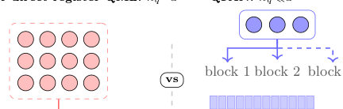
<figcaption class="paper-figure-caption"><b>Fig 1.</b> FIG. 1. Paradigm comparison. Prior direct-register QML requires nq=d qubits (left). QFAN reuses a fixed nq-qubit circuit across B blocks (right), so qubit requirements are de- termined by block size rather than by the full image dimen- sion.</figcaption>
</figure>
<figure class="paper-figure-card">
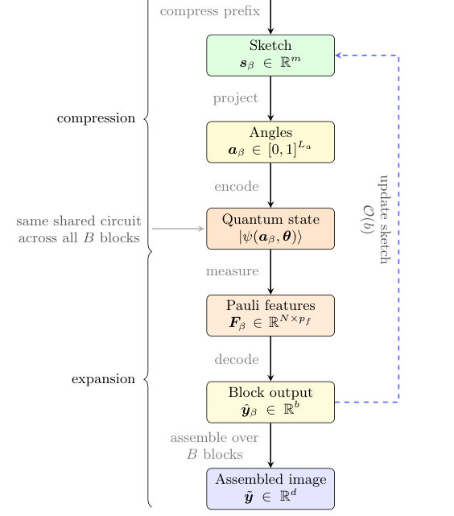
<figcaption class="paper-figure-caption"><b>Fig 2.</b> FIG. 2. Compression–expansion view of QFAN. At autore- gressive step β, a fixed-length sketch compresses the previ- ously generated prefix and is projected to circuit angles. The same shared parameterized quantum circuit is reused across all B blocks; its measurements produce Pauli features, which are decoded into the next block output ˆyβ. Repeating this cycle and feeding each generated block back into the sketch update yields the assembled image ˜y ∈Rd.</figcaption>
</figure>
<figure class="paper-figure-card">
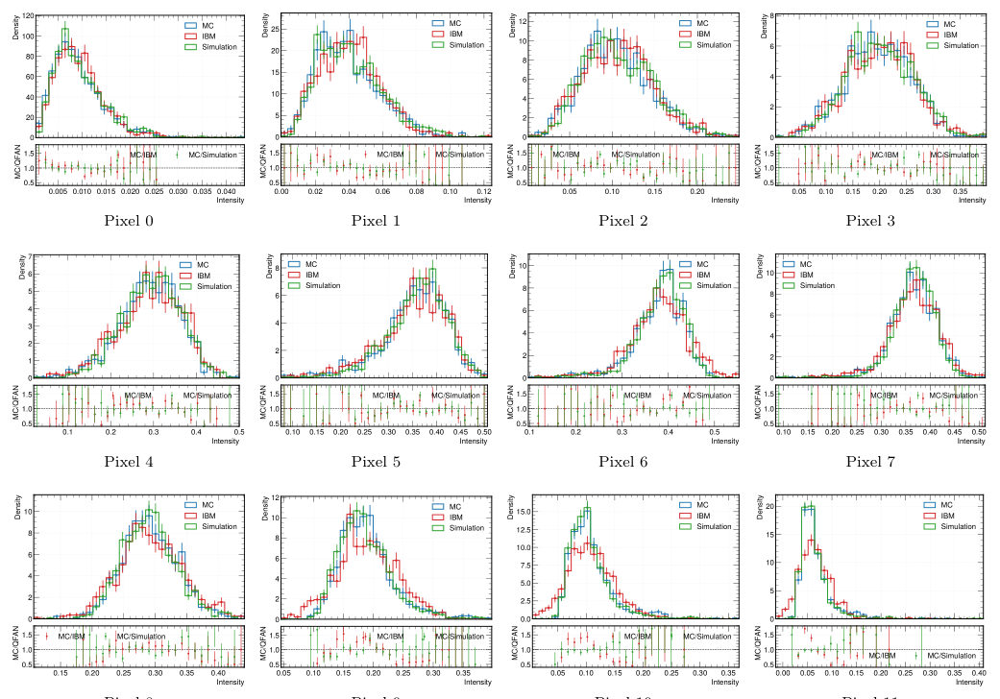
<figcaption class="paper-figure-caption"><b>Fig 3.</b> FIG. 4. Per-pixel marginal intensity distributions (variable intensity scale). MC truth (blue), IBM hardware (red), and simulator (green) are shown for each pixel, with MC/QFAN ratio panels below. Peak position shifts systematically from low intensity (pixel 0) to high intensity (pixel 5), reflecting longitudinal shower development. Both QFAN paths reproduce the MC distributions across all pixels.</figcaption>
</figure>
<figure class="paper-figure-card">
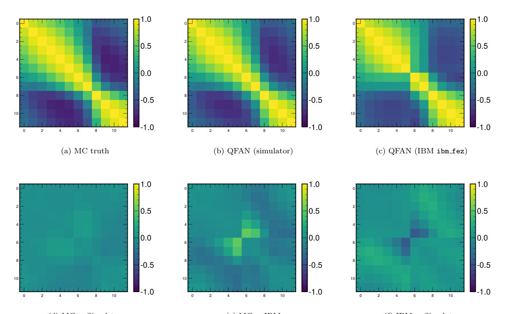
<figcaption class="paper-figure-caption"><b>Fig 4.</b> FIG. 5. Pearson correlation matrices (12×12). Top row: MC truth (a), simulator QFAN (b), and IBM hardware QFAN (c). Bottom row: pairwise differences. The MC−SIM (d) and MC−IBM (e) residuals are similar in magnitude and concentrated at the block boundary (pixels 4–7). The IBM−SIM difference (f) is the smallest, indicating that the two QFAN paths agree more closely with each other than either does with MC.</figcaption>
</figure>
<figure class="paper-figure-card">
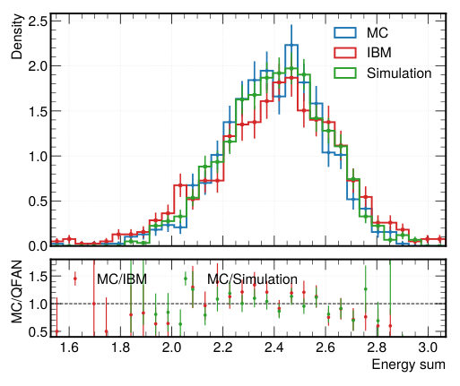
<figcaption class="paper-figure-caption"><b>Fig 5.</b> FIG. 6. Total energy E= P</figcaption>
</figure>
</div>
<p><strong>Summary.</strong> This paper introduces the Quantum Feature Amplification Network (QFAN), an autoregressive quantum generative model designed to simulate large-scale images like calorimeter showers. By generating the image sequentially in fixed-size blocks, QFAN bypasses the prohibitive requirement that quantum register size must grow with the image size. The authors demonstrate this feasibility by reproducing key physical observables on both simulators and real quantum hardware.</p>
<p><strong>Why it may be interesting.</strong> The core mechanism—decoupling resource scaling from output dimension via autoregression and fixed-size quantum circuits—is a major architectural advance for applying quantum computation to high-dimensional physical simulations.</p>
<details>
<summary>Detailed structure</summary>
<p><strong>Main problem.</strong> To develop quantum generative models capable of simulating large-scale physical images, such as calorimeter showers, without requiring the quantum register size to scale linearly with the image dimension.</p>
<p><strong>Main result.</strong> The Quantum Feature Amplification Network (QFAN) successfully establishes a hardware-compatible proof of principle by generating images block-by-block, keeping the required qubit count fixed regardless of the total image size.</p>
<p><strong>Method.</strong> The model uses an autoregressive factorization, where each block is generated by reusing a small parameterized quantum circuit conditioned on a fixed-length summary (count-sketch) of previously generated pixels.</p>
<p><strong>Model / system.</strong> The system simulates electromagnetic calorimeter showers, treating the energy deposition map as a high-dimensional image ($\mathbf{y}$). The model architecture is QFAN, which decomposes the image into sequential blocks ($B$) and uses a shared quantum circuit ($U(\mathbf{a}_eta, 	heta)$) for generation.</p>
<p><strong>Key observables.</strong> Per-pixel intensity distributions, inter-pixel correlation matrices, and the total energy distribution of the simulated showers.</p>
<p><strong>Important parameters / regimes.</strong> Qubit count ($n_q=3$), block size ($b$), total number of blocks ($B$), and the feature-to-target ratio ($
ho$).</p>
<p><strong>Assumptions / limitations.</strong> The training uses teacher-forcing (ground-truth prefixes), and the analysis cannot causally separate optimization-budget limitations from device noise effects.</p>
<p><strong>Figures summary.</strong> Figures illustrate the comparison between direct-register scaling ($n_q=d$) and QFAN's fixed-qubit approach; subsequent figures show the successful reproduction of marginal distributions, correlation structures, and total energy conservation across simulated and hardware backends.</p>
<p><strong>Paper structure.</strong> The paper introduces QFAN to solve the scaling bottleneck, details the autoregressive block generation process involving count-sketch conditioning and feature extraction, presents theoretical bounds on noise propagation, and validates the approach by reproducing key physical observables on both simulators and IBM quantum hardware.</p>
</details>
<details>
<summary>Abstract</summary>
<p>Direct-register quantum generative models for calorimeter shower simulation tie the quantum output dimension to the image dimension, so the required register size grows with the full image. Recent quantum-assisted methods reduce this pressure only by moving part of the generative task into hybrid latent-variable models. Consequently, current quantum demonstrations remain far below detector-scale geometries used in high-energy physics. We introduce the Quantum Feature Amplification Network (QFAN), which removes this register-size bottleneck by generating an image as a sequence of blocks. Each block is produced by the same small parameterized quantum circuit, conditioned on a compressed summary of the pixels already generated. Reusing the circuit fixes the qubit requirement by block size rather than full image size, while the per-step quantum processing cost is independent of image size for the Pauli-observable family used here. We derive a conservative worst-case bound on shot-noise propagation through the generation chain and give an empirical decoder-capacity heuristic for the reachable sequential depth. A three-qubit circuit with twelve shared variational parameters, closed-form ridge decoders, and a post-hoc residual sampler reproduces per-pixel intensity distributions, inter-pixel correlations, and total energy distributions of calorimeter showers on both simulator and IBM quantum hardware. At this scale, the hardware-simulator gap is consistent with optimization-budget limits dominating over device noise, although the experiments do not causally separate these effects. The results establish a hardware-compatible proof of principle and motivate, but do not validate, larger-scale extrapolations within this circuit family.</p>
</details>
<p><sub><a href="#top">↑ back to top</a></sub></p>

<p><a id="paper-2605.15370"></a></p>
<h3 id="quantum-feature-pyramid-gating-for-seismic-image-segmentation"><a href="http://arxiv.org/abs/2605.15370v1">Quantum Feature Pyramid Gating for Seismic Image Segmentation</a></h3>
<p><strong>Authors:</strong> Taha Gharaibeh, Jyotsna Sharma<br>
<strong>Type:</strong> both · <strong>Category:</strong> disordered systems and neural networks · <strong>PDF:</strong> <a href="https://arxiv.org/pdf/2605.15370v1">https://arxiv.org/pdf/2605.15370v1</a><br>
<strong>Analysis basis:</strong> full PDF text, analyzed in chunks</p>
<div class="figure-strip-hint">↔ Scroll figures horizontally</div>
<div class="paper-figures-scroll">
<figure class="paper-figure-card">
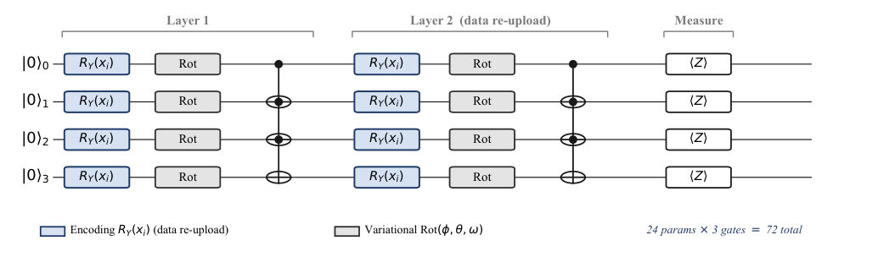
<figcaption class="paper-figure-caption"><b>Fig 1.</b> Fig. 1: Parameterized quantum circuit used in all architectures. Four qubits initialized to |0⟩, two layers with data re-uploading. Teal boxes: RY (xi) encodings re-applied at each layer [15]. Slate boxes: general Rot(ϕ, θ, ω) rotations with trainable parameters. CNOT rings entangle adjacent qubits; Pauli-Z expectations produce four scalars in [−1, 1]. 24 variational parameters per circuit × 3 gates = 72 quantum parameters total.</figcaption>
</figure>
<figure class="paper-figure-card">
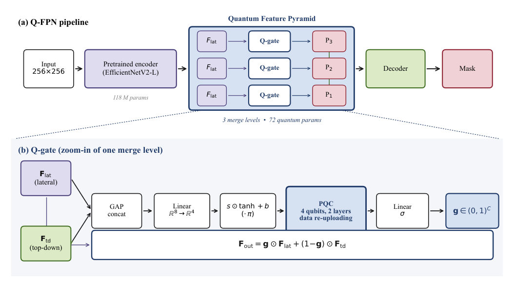
<figcaption class="paper-figure-caption"><b>Fig 2.</b> Fig. 2: Quantum FPN Gate (one merge level). Lateral (Flat) and top-down (Ftd) feature maps are compressed by global average pooling, concatenated, projected to R4, and rescaled via a learnable s⊙tanh +b into [−π, π]. A 4-qubit, 2-layer PQC with data re- uploading (24 variational parameters; 72 total across three merge levels) produces four Pauli-Z expectations, which a linear layer and sigmoid convert to a channel-wise gate g ∈(0, 1)C. The output is the convex combination Fout = g ⊙Flat +(1−g)⊙Ftd.</figcaption>
</figure>
<figure class="paper-figure-card">
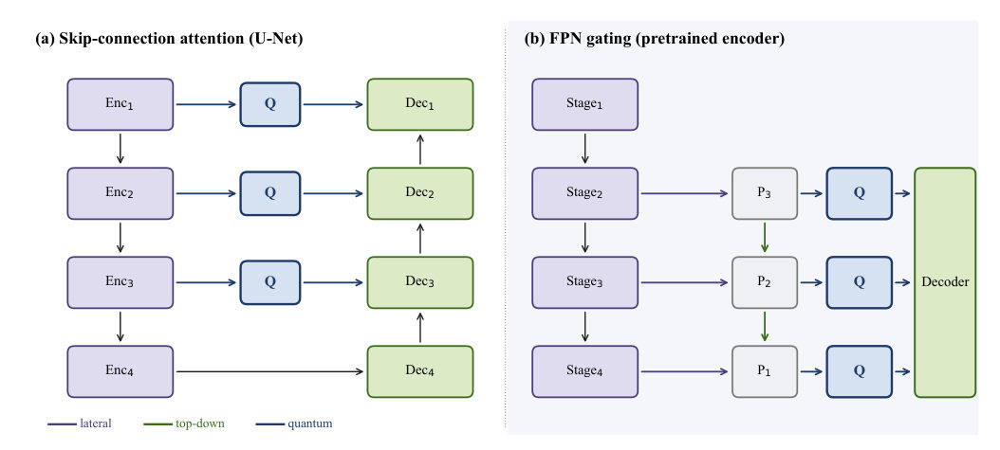
<figcaption class="paper-figure-caption"><b>Fig 3.</b> Fig. 3: Two integration topologies for parameterized quantum circuits. (a) Skip-connection attention: the PQC modulates encoder features before they reach the decoder, acting as a per-channel filter on one feature stream. (b) FPN gating: the PQC controls how lateral encoder features and top-down features combine at each pyramid level, computing a per-channel mixing ratio between two streams. Teal blocks marked “Q” are identical 4-qubit, 2-layer PQCs; the structural difference is filter one stream versus blend two streams. See Section III-C and Section III-D.</figcaption>
</figure>
<figure class="paper-figure-card">
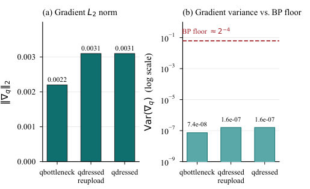
<figcaption class="paper-figure-caption"><b>Fig 4.</b> Fig. 4: Gradient diagnostics for circuit variants with logged quantum-parameter gradients. (a) ℓ2 norm of quantum- parameter gradients. (b) Variance on a logarithmic axis with the barren-plateau floor for n=4 qubits overlaid. Observed variances of 7.4 × 10−8 to 1.6 × 10−7 sit roughly 105</figcaption>
</figure>
<figure class="paper-figure-card">
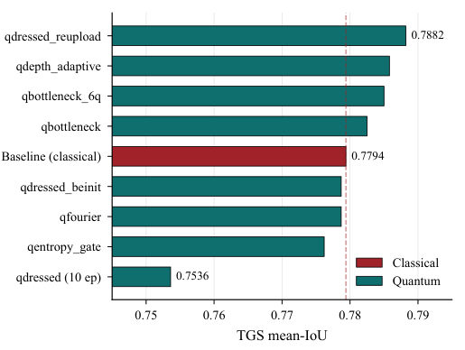
<figcaption class="paper-figure-caption"><b>Fig 5.</b> Fig. 5: Skip-attention circuit variants on the SolidUNet back- bone (128 × 128, 30 epochs). Every variant shares the same classical architecture; only the quantum circuit design differs. The dashed vertical line marks the classical base- line (0.7794). Data re-uploading (qdressed_reupload, 0.7882) gives the largest gain (+0.88 pp) among the eight circuits tested, consistent with the universality argument of Pérez-Salinas et al. [15]. Increasing qubit count from 4 to 6 (qbottleneck_6q) does not surpass 4-qubit re-uploading, suggesting feature quality rather than Hilbert-space dimension bounds performance at this backbone scale. Exact values appear in Table II.</figcaption>
</figure>
</div>
<p><strong>Summary.</strong> This paper proposes a Quantum Feature Pyramid Gating (Q-FPN) gate to enhance seismic image segmentation by improving feature fusion at the FPN merge points. It embeds a small, parameterized quantum circuit (PQC) into a standard deep learning backbone. The results show that this quantum gating mechanism provides a significant, measurable performance boost over purely classical fusion techniques, suggesting a viable application for quantum machine learning in geophysical imaging.</p>
<p><strong>Why it may be interesting.</strong> The work applies quantum circuit principles (PQC) to a deep learning task (image segmentation), demonstrating how quantum computation can be used as a trainable, non-linear feature transformation layer within a classical neural network architecture.</p>
<details>
<summary>Detailed structure</summary>
<p><strong>Main problem.</strong> The core problem is achieving accurate, dense, pixel-level segmentation of salt bodies in seismic images, which is complicated by wave propagation distortions.</p>
<p><strong>Main result.</strong> The proposed Quantum Feature Pyramid Gating (Q-FPN) gate significantly improves segmentation performance, showing a substantial gain (e.g., 9.85 percentage points) over classical fusion methods at the FPN merge point.</p>
<p><strong>Method.</strong> The method introduces a hybrid architecture embedding a Parameterized Quantum Circuit (PQC) at feature-fusion points to compute a learned, content-dependent convex combination of features.</p>
<p><strong>Model / system.</strong> The system uses a standard encoder-decoder segmentation pipeline (like U-Net/FPN) augmented by a 4-qubit, 2-layer PQC. The PQC processes compressed feature statistics to generate a gating weight, making the gate encoder-agnostic.</p>
<p><strong>Key observables.</strong> Mean Intersection over Union (IoU) score, TGS-mAP, and the magnitude of performance improvement ($\Delta$) when comparing quantum vs. classical gating.</p>
<p><strong>Important parameters / regimes.</strong> The quantum circuit has a fixed budget of 72 trainable parameters, operating on 4 qubits.</p>
<p><strong>Assumptions / limitations.</strong> The primary assumption is that the quantum function space accessed by the PQC provides a superior mechanism for feature correlation and fusion compared to simple classical addition or attention mechanisms.</p>
<p><strong>Figures summary.</strong> Figures illustrate the PQC structure (4-qubit, 2-layer) and compare the performance gains (e.g., $\Delta$ of 9.85 pp) achieved by the Q-FPN gate versus classical baselines across different encoders and resolutions.</p>
<p><strong>Paper structure.</strong> The paper introduces the Q-FPN gate, details the PQC implementation (encoding, variational layers), evaluates its performance on the TGS challenge by comparing it against classical element-wise addition and skip-connection attention, and concludes by analyzing the source of the performance gain.</p>
</details>
<details>
<summary>Abstract</summary>
<p>Accurate salt-body delineation is essential for seismic interpretation because salt structures distort wave propagation, complicate velocity-model building, obscure reservoir geometry, and increase uncertainty in exploration and drilling decisions. Although hybrid quantum-classical models have shown competitive performance on small-scale image-classification tasks, their value for dense, pixel-level geophysical prediction remains largely untested. This work introduces quantum feature gating, a hybrid segmentation architecture that embeds a parameterized quantum circuit (PQC) at feature-fusion points within an encoder-decoder pipeline. A 4-qubit, 2-layer PQC with data re-uploading computes a learned convex combination of lateral and top-down features at each Feature Pyramid Network merge point. A global-average-pooling layer maps encoder features to a fixed 4-dimensional quantum input, decoupling the 72-parameter quantum budget from backbone size and image resolution. The method is evaluated on the 2018 TGS Salt Identification Challenge using 4,000 seismic images at 101 x 101 resolution, across two integration topologies, eight circuit variants, and six encoders with 8M to 118M parameters under five-fold cross-validation. In a controlled EfficientNetV2-L ablation at 256 x 256 resolution, replacing the three Quantum FPN Gates with element-wise addition while holding the encoder, loss schedule, splits, and threshold search fixed reduces mean IoU from 0.9389 to 0.8404, a 9.85 percentage-point gap. Inserting the same circuit as skip-connection attention in a custom U-Net improves IoU by 0.88 points over the SolidUNet baseline, showing that the PQC contribution depends on where and what it gates. These results provide controlled evidence that quantum feature fusion can improve dense seismic segmentation.</p>
</details>
<p><sub><a href="#top">↑ back to top</a></sub></p>

<p><a id="paper-2605.15747"></a></p>
<h3 id="quantum-game-theory-for-2-2-games-a-mathematical-framework"><a href="http://arxiv.org/abs/2605.15747v1">Quantum game theory for 2 2 games: a mathematical framework</a></h3>
<p><strong>Authors:</strong> Gloria Ferraris, Veronica Umanità<br>
<strong>Type:</strong> theory · <strong>Category:</strong> other · <strong>PDF:</strong> <a href="https://arxiv.org/pdf/2605.15747v1">https://arxiv.org/pdf/2605.15747v1</a><br>
<strong>Analysis basis:</strong> full PDF text, analyzed in chunks</p>
<div class="figure-strip-hint">↔ Scroll figures horizontally</div>
<div class="paper-figures-scroll">
<figure class="paper-figure-card">
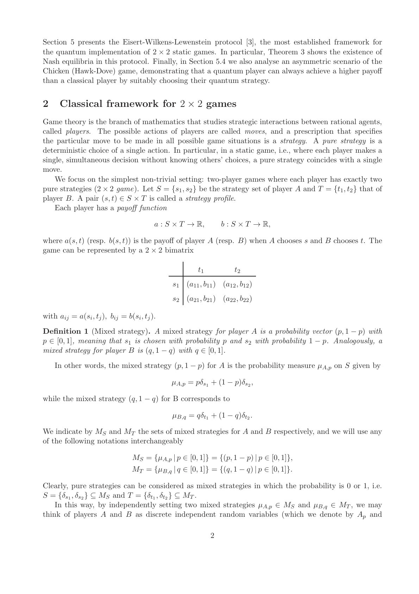
<figcaption class="paper-figure-caption"><b>Fig 1.</b> Low-resolution page preview, page 2</figcaption>
</figure>
<figure class="paper-figure-card">
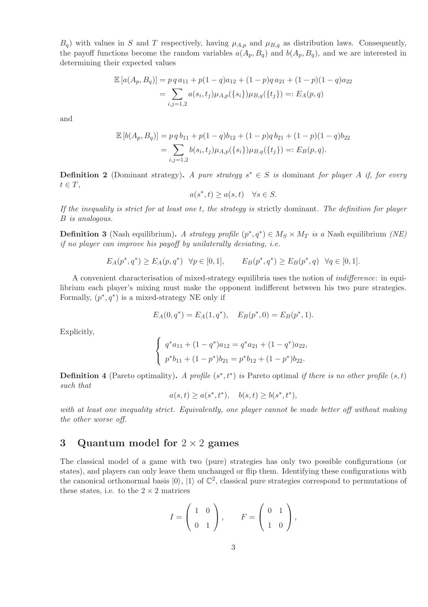
<figcaption class="paper-figure-caption"><b>Fig 2.</b> Low-resolution page preview, page 3</figcaption>
</figure>
<figure class="paper-figure-card">
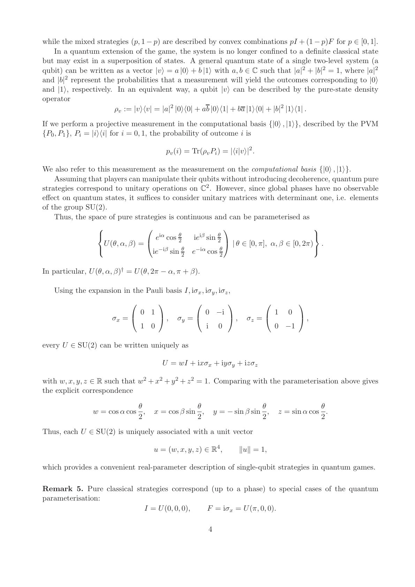
<figcaption class="paper-figure-caption"><b>Fig 3.</b> Low-resolution page preview, page 4</figcaption>
</figure>
<figure class="paper-figure-card">
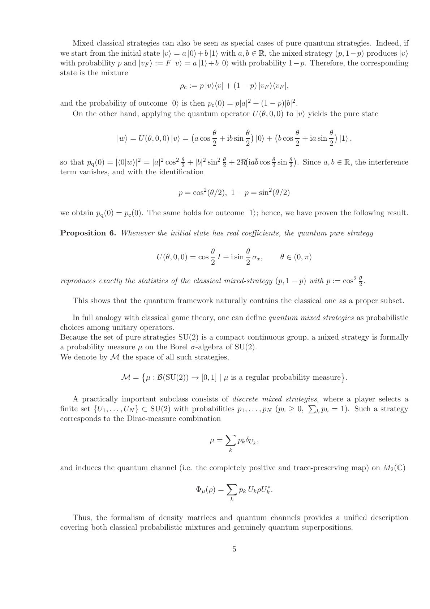
<figcaption class="paper-figure-caption"><b>Fig 4.</b> Low-resolution page preview, page 5</figcaption>
</figure>
<figure class="paper-figure-card">
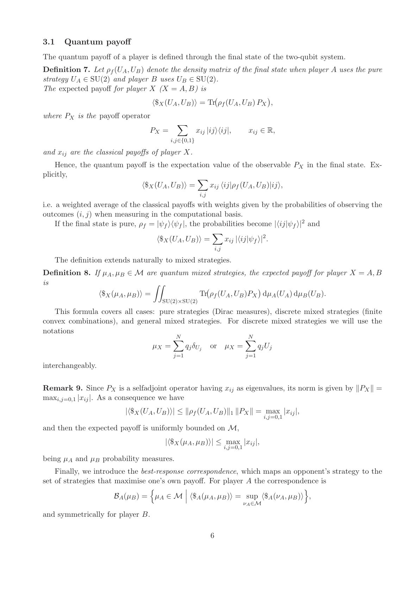
<figcaption class="paper-figure-caption"><b>Fig 5.</b> Low-resolution page preview, page 6</figcaption>
</figure>
</div>
<p><strong>Summary.</strong> This paper constructs a rigorous mathematical theory for quantum game theory applied to 2x2 games, extending classical concepts to the quantum domain using SU(2) unitaries. It proves the existence of quantum Nash equilibria for continuous mixed strategies and demonstrates that quantum strategies can yield payoffs superior to classical ones. The work is significant for understanding strategic interactions in quantum mechanical settings.</p>
<p><strong>Why it may be interesting.</strong> While not directly about AMO systems, the mathematical tools developed for analyzing optimal strategies in quantum games (using SU(2) representations and fixed-point theorems) are highly relevant for understanding optimal control or equilibrium states in open quantum systems.</p>
<details>
<summary>Detailed structure</summary>
<p><strong>Main problem.</strong> The paper develops a rigorous mathematical framework to extend quantum game theory to static 2x2 games, specifically proving the existence of Nash equilibria for continuous quantum mixed strategies.</p>
<p><strong>Main result.</strong> It proves the existence of quantum Nash equilibria for continuous mixed strategies using fixed-point theorems, showing that quantum strategies can outperform classical ones in certain scenarios like the Chicken game.</p>
<p><strong>Method.</strong> The analysis uses the Eisert-Wilkens-Lewenstein (EWL) protocol, representing strategies as unitary operations in SU(2) and defining mixed strategies as probability measures on SU(2).</p>
<p><strong>Model / system.</strong> The model is a static two-player 2x2 game analyzed in the quantum setting using qubits and unitary operators in SU(2). The framework compares quantum strategies to classical probability distributions.</p>
<p><strong>Key observables.</strong> Expected payoffs for both players ($\langle A 
angle, \langle B 
angle$), which are derived as expectation values of payoff operators.</p>
<p><strong>Important parameters / regimes.</strong> The entanglement parameter $\gamma$ in the EWL protocol, and the continuous strategy parameters defining the unitary operations in SU(2).</p>
<p><strong>Assumptions / limitations.</strong> The analysis assumes players can manipulate qubits without introducing decoherence, and the existence proof relies on applying theorems like Kakutani-Glicksberg-Ky Fan to the space of measures M(SU(2)).</p>
<p><strong>Paper structure.</strong> The paper first establishes the mathematical formalism for quantum strategies and mixed states, then introduces the EWL protocol, and finally applies this framework to prove the existence of Nash equilibria and analyze payoff differences in specific games.</p>
</details>
<details>
<summary>Abstract</summary>
<p>We develop a rigorous mathematical framework for quantum game theory applied to static 2x2 games, extending classical concepts to the quantum setting where players may employ arbitrary unitary operations (pure strategies) or probability measures over the continuous group SU(2) (mixed strategies). The Eisert-Wilkens-Lewenstein protocol is introduced as the standard implementation of quantum 2x2 games. We prove the existence of Nash equilibria for continuous quantum mixed strategies via a fixed-point argument, generalising the classical Nash theorem to the quantum case.</p>
</details>
<p><sub><a href="#top">↑ back to top</a></sub></p>

<p><a id="paper-2605.16189"></a></p>
<h3 id="quantum-solvers-for-nonlinear-matrix-equations-in-quantum-chemistry"><a href="http://arxiv.org/abs/2605.16189v1">Quantum Solvers for Nonlinear Matrix Equations in Quantum Chemistry</a></h3>
<p><strong>Authors:</strong> Pablo Rodenas-Ruiz, Andrew Zhao, Joonho Lee<br>
<strong>Type:</strong> theory · <strong>Category:</strong> quantum information and computing · <strong>PDF:</strong> <a href="https://arxiv.org/pdf/2605.16189v1">https://arxiv.org/pdf/2605.16189v1</a><br>
<strong>Analysis basis:</strong> full PDF text, analyzed in chunks</p>
<div class="figure-strip-hint">↔ Scroll figures horizontally</div>
<div class="paper-figures-scroll">
<figure class="paper-figure-card">
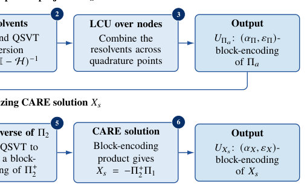
<figcaption class="paper-figure-caption"><b>Fig 1.</b> FIG. 1. Workflow of the quantum CARE solver algorithm.</figcaption>
</figure>
</div>
<p><strong>Summary.</strong> This work presents a quantum algorithm to solve the Algebraic Riccati Equation relevant to calculating electronic correlation energy in quantum chemistry. By block-encoding solutions using Riesz projectors and QSVT, the authors demonstrate a quantum speedup in scaling with the excitation rank $m$. This establishes a general quantum framework for nonlinear matrix equations in quantum chemistry, potentially applicable to coupled-cluster theory.</p>
<p><strong>Why it may be interesting.</strong> It provides a concrete, quantum-algorithmic pathway to tackle notoriously difficult, non-linear many-body problems in quantum chemistry, bridging quantum computation directly to electronic structure theory.</p>
<details>
<summary>Detailed structure</summary>
<p><strong>Main problem.</strong> Developing a quantum algorithm to solve nonlinear matrix equations, specifically the Algebraic Riccati Equation (CARE), arising in quantum chemistry.</p>
<p><strong>Main result.</strong> The algorithm achieves a computational cost scaling linearly with system size and polynomially with excitation rank $m$, suggesting an exponential advantage over classical methods for calculating correlation energy.</p>
<p><strong>Method.</strong> The method block-encodes stabilizing Riccati solutions using Riesz projectors constructed via contour-integral resolvents and implemented using Quantum Singular Value Transformations (QSVT).</p>
<p><strong>Model / system.</strong> The application is in quantum chemistry, specifically calculating the electronic correlation energy density using the Random-Phase Approximation (RPA) and its $m$-particle-$m$-hole generalizations ($m$-RPA).</p>
<p><strong>Key observables.</strong> Electronic correlation-energy density ($E_c$), the stabilizing solution $X_s$, and the block-encoded Riesz projector ($\Pi_a$).</p>
<p><strong>Important parameters / regimes.</strong> System size ($V$), excitation rank ($m$), spectral gap ($\delta$), and desired error ($\epsilon$).</p>
<p><strong>Assumptions / limitations.</strong> Assumes localized-orbital sparsity, that the associated matrix $H$ has no eigenvalues on the imaginary axis, and relies on the convergence of contour integrals via the trapezoid rule.</p>
<p><strong>Figures summary.</strong> Figures illustrate the workflow: (1) Block-encoding $\Pi_a$ via contour quadrature, (2) Extracting $X_s$ using $\Pi_1$ and $\Pi_2^+$, and (3) Calculating $    ext{Tr}(BX)$ using amplitude estimation.</p>
<p><strong>Paper structure.</strong> The paper builds from defining the CARE and its associated Hamiltonian $H$, detailing the quantum machinery (Riesz projectors, QSVT, block-encoding), and finally applying this framework to derive the scaling for the correlation energy estimation.</p>
</details>
<details>
<summary>Abstract</summary>
<p>We present a quantum algorithm for solving algebraic Riccati equations, with applications to quantum-chemical random-phase approximation (RPA) and higher-order RPA theories. Our method block-encodes stabilizing Riccati solutions via Riesz projectors onto invariant subspaces of an associated non-normal matrix, implemented using contour-integral resolvents and quantum singular value transformations. Applied to $m$-particle, $m$-hole RPA, our algorithm yields a block-encoding of the amplitude solution and estimates the electronic correlation-energy density with it. Under localized-orbital sparsity assumptions, the end-to-end cost scales linearly with system size and polynomially with excitation rank $m$, suggesting an exponential advantage in $m$ over plausible classical local-correlation heuristics. More broadly, this work provides a framework for quantum algorithms for nonlinear matrix equations in quantum chemistry and opens a possible route toward developing quantum algorithms for coupled-cluster theory.</p>
</details>
<p><sub><a href="#top">↑ back to top</a></sub></p>

<p><a id="paper-2605.15266"></a></p>
<h3 id="synthesis-and-optimization-of-encoding-circuits-for-fault-tolerant-quantum-computation"><a href="http://arxiv.org/abs/2605.15266v1">Synthesis and Optimization of Encoding Circuits for Fault-Tolerant Quantum Computation</a></h3>
<p><strong>Authors:</strong> Tom Peham, Matthew Steinberg, Robert Wille, Sascha Heußen<br>
<strong>Type:</strong> theory · <strong>Category:</strong> quantum information and computing · <strong>PDF:</strong> <a href="https://arxiv.org/pdf/2605.15266v1">https://arxiv.org/pdf/2605.15266v1</a><br>
<strong>Analysis basis:</strong> full PDF text, analyzed in chunks</p>
<div class="figure-strip-hint">↔ Scroll figures horizontally</div>
<div class="paper-figures-scroll">
<figure class="paper-figure-card">
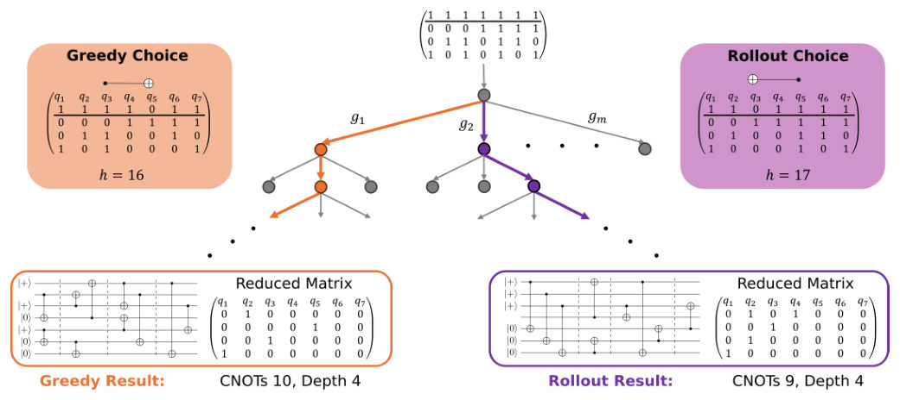
<figcaption class="paper-figure-caption"><b>Fig 1.</b> FIG. 2: Encoding circuit synthesis as state space search. Every state corresponds to an intermediate circuit and a stabilizer tableau, and states are connected via gate applications. Goal states represent valid implementations of the target encoding isometry. A heuristic score h is used to estimate the cost of synthesizing the remaining circuit for a given node. The orange path is obtained by greedily choosing the gate that minimizes h. The purple path is obtained by performing this greedy synthesis from the second-best node on the second level. The rollout approach fully expands the greedy path of both states and picks the best one. This results in the rollout search picking the purple...</figcaption>
</figure>
<figure class="paper-figure-card">
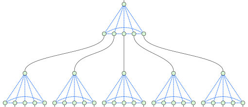
<figcaption class="paper-figure-caption"><b>Fig 2.</b> FIG. 4: Encoding circuit synthesis of the J25, 1, 9K concatenated J5, 1, 3K code. (a) The ZX-diagram for the 25-qubit encoder is constructed by connecting the outputs of one copy of the 5-qubit encoding isometry with the inputs of five more copies of the 5-qubit encoder. (b) An encoding circuit is constructed by replacing each 5-qubit encoding diagram with a circuit extracted from the isometry.</figcaption>
</figure>
<figure class="paper-figure-card">
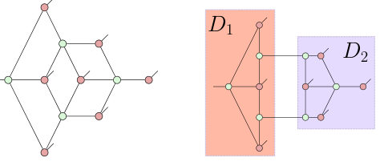
<figcaption class="paper-figure-caption"><b>Fig 3.</b> FIG. 5: (a) ZX-diagram of the encoding isometry of the J7, 1, 3K Steane code. (b) Partitioning of the Steane en- coder into two smaller encoding isometries.</figcaption>
</figure>
<figure class="paper-figure-card">
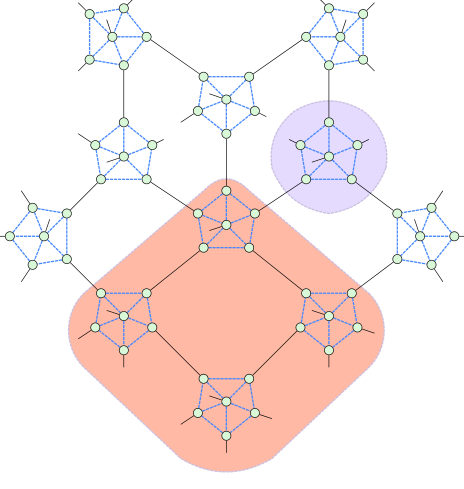
<figcaption class="paper-figure-caption"><b>Fig 4.</b> FIG. 6: ZX-diagram of a holographic HaPPY [29] code. Logical (bulk) input legs are connected to the center spi- ders of the constituent five-qubit encoding isometries, while physical output (boundary) legs are connected to the outer spiders. The highlighted subdiagrams illus- trate two constituent local encoding isometries: a smaller 2-input-4-output block (blue) and a larger 4-input-12- output block (orange).</figcaption>
</figure>
<figure class="paper-figure-card">
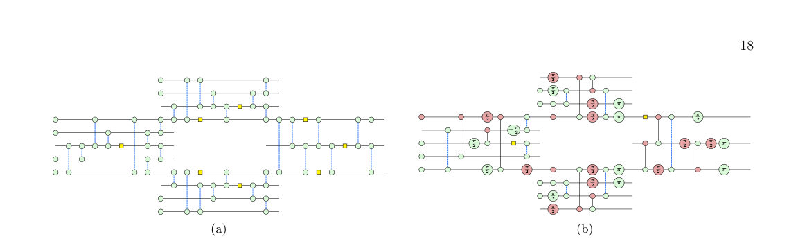
<figcaption class="paper-figure-caption"><b>Fig 5.</b> FIG. 7: Encoding circuits for the 12-qubit HaPPY code obtained from two modular synthesis strategies. (a) Circuit obtained by directly extracting local encoding circuits from the constituent sub-isometries, requiring 32 two-qubit gates. (b) Circuit obtained by optimally resynthesizing the local constituent encoders, reducing the gate count to 20 two-qubit gates at depth 10. For comparison, direct rollout-based resynthesis of the full 12-qubit encoder yields a circuit with 22 two-qubit gates at depth 9 when optimizing for gate count, and a circuit with 24 two-qubit gates at depth 8 when optimizing for depth. This illustrates the trade-off between modular exact local synthesis and full...</figcaption>
</figure>
</div>
<p><strong>Summary.</strong> This paper presents advanced algorithmic techniques for synthesizing the quantum circuits needed to prepare arbitrary logical states in fault-tolerant quantum computation. By formulating the problem as a search over stabilizer tableaus, the authors introduce greedy and rollout algorithms that significantly reduce the required two-qubit gate count and circuit depth. This optimization is crucial for making large-scale quantum error correction schemes practical.</p>
<p><strong>Why it may be interesting.</strong> While focused on quantum computation, the rigorous algorithmic development using search heuristics (greedy, rollout) and formal verification (SMT/ZX-calculus) provides transferable computational techniques applicable to optimizing complex quantum state preparation protocols in AMO physics.</p>
<details>
<summary>Detailed structure</summary>
<p><strong>Main problem.</strong> The core problem is synthesizing and optimizing efficient quantum circuits required to prepare arbitrary logical states for fault-tolerant quantum computation.</p>
<p><strong>Main result.</strong> The proposed methods achieve significant improvements (up to 43% in two-qubit gate count and 70% in depth) over existing techniques for encoding state preparation in various stabilizer codes.</p>
<p><strong>Method.</strong> The authors develop algorithms based on searching over stabilizer tableaus, utilizing greedy and rollout-based heuristics, and employing SMT solvers for optimal local circuit synthesis.</p>
<p><strong>Model / system.</strong> The work focuses on quantum error-correcting codes (e.g., holographic and qLDPC codes) and models the encoding process as realizing a specific isometry using Clifford quantum gates.</p>
<p><strong>Key observables.</strong> Two-qubit gate count, circuit depth, and the structure of the stabilizer tableau.</p>
<p><strong>Important parameters / regimes.</strong> The size and structure of the stabilizer code (e.g., J23, J144), and the rollout level ($\ell$).</p>
<p><strong>Assumptions / limitations.</strong> The synthesis is modeled as a search over stabilizer tableaus, and the heuristic search relies on the assumption that the optimal circuit can be found by local greedy or rollout decisions.</p>
<p><strong>Figures summary.</strong> Figures illustrate the ZX diagram representations of encoding isometries and compare the performance of greedy vs. rollout synthesis under varying early termination settings for optimizing gate count and depth.</p>
<p><strong>Paper structure.</strong> The paper progresses from defining the problem (encoding isometries) to developing search algorithms (greedy/rollout) over stabilizer tableaus, optimizing for gate count and depth, and finally analyzing the impact of search termination strategies.</p>
</details>
<details>
<summary>Abstract</summary>
<p>Preparing arbitrary logical states is a central primitive for universal fault-tolerant quantum computation and the cost of encoded-state preparation contributes directly to the overall resource overhead. This makes the synthesis of efficient general-state encoding circuits an important problem, particularly with respect to two-qubit gate count and circuit depth. Yet the synthesis of such encoders has been studied less extensively than general Clifford circuit synthesis or the preparation of specific logical Pauli-eigenstates. In this work, we develop methods for synthesizing efficient encoders for arbitrary stabilizer codes. We formulate encoder synthesis as a search over stabilizer tableaus and introduce greedy and rollout-based algorithms that exploit the freedom among stabilizer-equivalent realizations of the same encoding isometry. For code families with a modular structure, such as generalized concatenated and holographic codes, we show how large encoders can be assembled from optimized local constituent encoders, and we use SMT-based exact synthesis to obtain optimal local circuits for small instances. We further evaluate the proposed methods on a broad set of stabilizer codes, including holographic and quantum low-density parity-check (qLDPC) codes, and compare them against recent encoder-synthesis methods and existing constructions from the literature, obtaining improvements of up to 43% in two-qubit gate count and up to 70% in depth. Our results support the optimization of encoded-state preparation in several fault-tolerant quantum-computing schemes, and all methods are openly available as part of the Munich Quantum Toolkit.</p>
</details>
<p><sub><a href="#top">↑ back to top</a></sub></p>
</details>
<h2 id="secondary-cond-mat-archives">Secondary cond-mat archives</h2>
<p><em>Papers from cond-mat.mtrl-sci, mes-hall, other, soft, supr-con. These archives are de-prioritized — they appear at the end regardless of relevance score.</em></p>
<h3 id="relevant-in-secondary-archives-28">Relevant in secondary archives (28)</h3>

<p><a id="paper-2605.16236"></a></p>
<h3 id="acoustic-spin-resonance-in-polariton-condensates"><a href="http://arxiv.org/abs/2605.16236v1">Acoustic spin resonance in polariton condensates</a></h3>
<p><strong>Authors:</strong> D. A. Saltykova, A. Kudlis, A. V. Yulin, I. A. Shelykh<br>
<strong>Type:</strong> theory · <strong>Category:</strong> other · <strong>PDF:</strong> <a href="https://arxiv.org/pdf/2605.16236v1">https://arxiv.org/pdf/2605.16236v1</a><br>
<strong>Analysis basis:</strong> full PDF text, analyzed in chunks
<strong>Topic relevance:</strong> 🔥 <code>spintronics-quantum-optics interface</code> <strong>4/5</strong> · <code>analog quantum simulation</code> <strong>3/5</strong> · <code>correlated cavity matter</code> <strong>3/5</strong> · <code>driven-dissipative phase transition</code> <strong>3/5</strong> · <code>exotic spin models in light-matter</code> <strong>3/5</strong> · <code>non-equilibrium dynamics</code> <strong>3/5</strong> · <code>Keldysh / 2PI / non-Gaussian methods</code> <strong>2/5</strong> · <code>Tavis-Cummings &amp; cavity-many-emitter</code> <strong>2/5</strong> · <code>correlated / nonlocal dissipation</code> <strong>2/5</strong> · <code>methods for driven-dissipative</code> <strong>2/5</strong> · <code>non-equilibrium universality</code> <strong>2/5</strong> · <code>entanglement &amp; information structure</code> <strong>1/5</strong></p>
<div class="figure-strip-hint">↔ Scroll figures horizontally</div>
<div class="paper-figures-scroll">
<figure class="paper-figure-card">
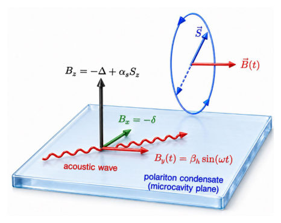
<figcaption class="paper-figure-caption"><b>Fig 1.</b> Figure 1. Geometry of acoustic spin resonance in a polariton condensate. A longitudinal acoustic wave prop- agating in the microcavity plane produces a time-periodic strain-induced effective magnetic field acting on the conden- sate pseudospin S. The static field contains the in-plane splitting Bx = −δ and the out-of-plane component Bz = −∆+ αsSz, which combines the Zeeman term and the self- induced field. In the resonant geometry used in the main sim- ulations, ϕ = π/4, the acoustic contribution is transverse to the static in-plane field and is written as By(t) = βh sin(ωt). The acoustic drive can therefore excite pseudospin precession on the Poincar´e sphere and generate large...</figcaption>
</figure>
<figure class="paper-figure-card">

<figcaption class="paper-figure-caption"><b>Fig 2.</b> Figure 2. Conservative acoustic pseudospin resonance. Calculated from the conservative limit of Eq. (2), with gain, losses, reservoir coupling, lifetime anisotropy, Zeeman split- ting, and spin relaxation neglected. The acoustic wave prop- agates at ϕ = π/4, so that the acoustic field is transverse to the static in-plane splitting. We use E0 = 0.020678 meV, E0/h = 5.00 GHz, t0 = 31.83 ps, and δE = 16.54 µeV. The nonlinear curves are calculated with αs = 0.35, correspond- ing to αphys = 0.905 µeV µm2 and n(c) ∗ = 8.0 µm−2. The labels N0 = 4, 8, 12 µm−2 denote physical condensate densi- ties; the corresponding conserved dimensionless spin lengths are N0/n(c) ∗ = 0.5, 1.0, 1.5. (a) Frequency...</figcaption>
</figure>
<figure class="paper-figure-card">

<figcaption class="paper-figure-caption"><b>Fig 3.</b> Figure 4. Bifurcated stationary state and resonant acoustic response induced by lifetime anisotropy. The calculations use ∆= 0, αs = 0.5, δE = 16.54 µeV, and E0 = 0.020678 meV. (a,b) Stationary maps of |⟨Sz/|S|⟩| in the (P/Pth, γa,E) plane without acoustic drive, for λrelax = 0 and λrelax = 0.05, respectively. The white markers indicate the same working point, P/Pth = 1.30 and γa,E = 3.03 µeV. The inset in panel (b) shows the relaxation toward the station- ary out-of-plane state at this working point. The branch used for the driven calculations is selected by an undriven prepara- tory relaxation at βh = 0, starting from (Sx, Sy, Sz, nR)(0) ≃ (0.12, 0, 0.03, 1.30), S(0) |S(0)| ≃ (0.970, 0,...</figcaption>
</figure>
<figure class="paper-figure-card">

<figcaption class="paper-figure-caption"><b>Fig 4.</b> Figure 3. Dissipative acoustic response and slow- amplitude hysteresis. All panels are calculated from Eqs. (2)–(3) for the minimal pumped–dissipative specializa- tion with γa = ∆= 0, λrelax = 0.05, and ϕ = π/4. The nonlinear curves, maps, and sweeps use αs = 0.5; the blue curve in panel (a) is the linear reference (αs = 0). The di- mensional calibration is E0 = 0.020678 meV, so that E0/h = 5.00 GHz. The driven simulations are initialized from the un- driven linearly polarized pumped state (Sx, Sy, Sz, nR)(0) = (P −Pth, 0, 0, 1), in dimensionless units. (a) Frequency re- sponse Ax at fixed acoustic amplitude βh,E = 3.10 µeV. The blue curve is the linear reference at P/Pth = 1.25, while the...</figcaption>
</figure>
<figure class="paper-figure-card">

<figcaption class="paper-figure-caption"><b>Fig 5.</b> Figure 5. Time-domain acoustic switching in the bi- furcated regime. The working point is the one marked in Fig. 4: P/Pth = 1.30, γa,E = 3.03 µeV, and λrelax = 0.05, with smooth turn-on time τon = 30.56 ns. All driven traces start from the relaxed undriven stationary state selected by the preparatory protocol described in Fig. 4: (Sx, Sy, Sz, nR)(0) ≃(−1.610, 0.162, −1.046, 0.877), S(0) |S(0)| ≃ (−0.836, 0.084, −0.543). (a) Driven traces of Sz/|S| at the res- onant drive energy E0ω = 9.13 µeV for βh,E = 0.62 µeV and 0.21 µeV. The stronger drive produces switching between the two dissipative branches, whereas the weaker drive re- mains near the initial branch. The inset shows the switch- ing...</figcaption>
</figure>
</div>

<p><strong>Summary.</strong> This paper theoretically models acoustic spin resonance in polariton condensates, treating the system's pseudospin dynamics using coupled nonlinear equations. It shows that acoustic waves can drive large, nonlinear, and history-dependent oscillations in the condensate's polarization. The findings establish coherent acoustic driving as a powerful, tunable mechanism for controlling quantum spin states in these semiconductor microcavity systems.</p>
<p><strong>Why it may be interesting.</strong> This work is highly relevant to AMO physics and quantum optics as it treats a complex, interacting many-body system (polaritons) using concepts from driven, damped, nonlinear oscillators, showing how external mechanical fields (acoustics) can control quantum coherence.</p>
<details>
<summary>Detailed structure</summary>
<p><strong>Main problem.</strong> The paper theoretically investigates acoustic spin resonance in spinor polariton condensates, analyzing how time-periodic strain-induced acoustic fields drive polarization oscillations in the condensate pseudospin.</p>
<p><strong>Main result.</strong> The study demonstrates that acoustic driving can induce resonant, nonlinear, and switchable control over the polariton pseudospin dynamics, with lifetime anisotropy enabling the switching between distinct stationary polarization states.</p>
<p><strong>Method.</strong> The analysis involves deriving and solving coupled, nonlinear differential equations governing the pseudospin and reservoir density, examining both conservative and fully dissipative regimes.</p>
<p><strong>Model / system.</strong> The system is a spinor polariton condensate in a semiconductor microcavity, modeled by an effective pseudospin $\mathbf{S}$ coupled to an excitonic reservoir density $n_R$. The dynamics incorporate static splitting, spin-dependent interactions, and a time-dependent acoustic driving field.</p>
<p><strong>Key observables.</strong> Oscillation amplitude ($A_j(\omega)$), out-of-plane pseudospin component ($\langle S_z/|S| 
angle$), and the resonance frequency ($\omega$).</p>
<p><strong>Important parameters / regimes.</strong> Static splitting ($\delta$), Zeeman splitting ($\Delta$), spin-dependent interaction ($\alpha_s$), acoustic amplitude ($eta_h$), and various decay/gain rates ($\gamma, \gamma_a$).</p>
<p><strong>Assumptions / limitations.</strong> The analysis employs the single-mode approximation and often linearizes the dynamics around stationary states, though it also explores the full nonlinear, dissipative regime.</p>
<p><strong>Figures summary.</strong> Figures illustrate the geometry of the resonance, the frequency response showing hysteresis in the dissipative regime, and time-domain traces demonstrating acoustic switching between bifurcated stationary states.</p>
<p><strong>Paper structure.</strong> The paper systematically builds the model by deriving the full coupled equations, then analyzes the dynamics in the conservative limit, progresses to the minimal pumped-dissipative regime, and finally explores the effects of lifetime anisotropy and Zeeman tuning to show switchable control.</p>
</details>
<details>
<summary>Abstract</summary>
<p>We theoretically investigate acoustic spin resonance in a spatially homogeneous spinor polariton condensate. A longitudinal acoustic wave generates a time-periodic strain-induced effective magnetic field acting on the condensate pseudospin. When this field is transverse to the static in-plane linear-polarization splitting, it resonantly drives polarization oscillations. We show that spin-dependent interactions shift the resonance and produce nonlinear line shapes, while gain, reservoir dynamics, and spin relaxation make the response dissipative and history-dependent, producing amplitude hysteresis. In the presence of lifetime anisotropy, the condensate can develop a bifurcated stationary state with finite circular polarization, and a resonant acoustic drive can switch between the corresponding out-of-plane branches. A Zeeman splitting provides an additional conservative knob for tuning the resonance frequency. Our results identify coherent acoustic driving as a route to resonant, nonlinear, and switchable control of polariton pseudospin dynamics.</p>
</details>
<p><sub><a href="#top">↑ back to top</a></sub></p>

<p><a id="paper-2605.15826"></a></p>
<h3 id="front-propagation-in-non-homogeneous-math852math-model"><a href="http://arxiv.org/abs/2605.15826v1">Front propagation in non-homogeneous $φ^4$ model</a></h3>
<p><strong>Authors:</strong> Jacek Gatlik, Tomasz Dobrowolski, Dominika Lasa, Panayotis G. Kevrekidis<br>
<strong>Type:</strong> theory · <strong>Category:</strong> statistical mechanics · <strong>PDF:</strong> <a href="https://arxiv.org/pdf/2605.15826v1">https://arxiv.org/pdf/2605.15826v1</a><br>
<strong>Analysis basis:</strong> full PDF text, analyzed in chunks
<strong>Topic relevance:</strong> 🔥 <code>Keldysh / 2PI / non-Gaussian methods</code> <strong>4/5</strong> · 🔥 <code>methods for driven-dissipative</code> <strong>4/5</strong> · <code>Frenkel-Kontorova</code> <strong>3/5</strong> · <code>driven-dissipative phase transition</code> <strong>3/5</strong> · <code>non-equilibrium dynamics</code> <strong>3/5</strong> · <code>non-equilibrium universality</code> <strong>3/5</strong> · <code>analog quantum simulation</code> <strong>2/5</strong> · <code>correlated / nonlocal dissipation</code> <strong>2/5</strong> · <code>Kondo &amp; dissipative impurity</code> <strong>1/5</strong></p>
<div class="figure-strip-hint">↔ Scroll figures horizontally</div>
<div class="paper-figures-scroll">
<figure class="paper-figure-card">

<figcaption class="paper-figure-caption"><b>Fig 1.</b> Figure 1: (a) Comparison of kink trajectories from the field equation (solid black line) and the effective model (orange dashed line). The gray area represents the time during which the kink moves in the area of changed dissipation. Panel (b) shows the difference ∆x0(t). Parameters are chosen as follows: x0 = −50, η0 = 0.1, Γ = 0.025, λ = 1, and ε = 0.05.</figcaption>
</figure>
<figure class="paper-figure-card">

<figcaption class="paper-figure-caption"><b>Fig 2.</b> Figure 2: Changes in kink velocity when entering an area of increased dissipation. In both panels, the initial position of the kink is x0 = −50. Parameters in the figures are chosen as follows η0 = 0.1, Γ = 0.025, λ = 1, (a) ε = 0.05, (b) ε = 0.1.</figcaption>
</figure>
<figure class="paper-figure-card">

<figcaption class="paper-figure-caption"><b>Fig 3.</b> Figure 3 shows changes in the velocity of the kink as it passes through a layer with increased dissipation and thickness L0 = 20. The parameters on both panels were selected so that the initial speeds of the kink were significantly different, i.e., (a) η0 = 0.1, Γ = 0.025 and (b) η0 = 0.04, Γ = 0.02. As before, speed deviations from the effective model appear at the beginning. Depending on the initial speed, the kink velocity decreases markedly in the layer of increased dissipation. After damping the initial oscillations, the agreement between the effective model and the field model is fairly striking. It can be seen that on both panels, the change in dissipation is at the level of one...</figcaption>
</figure>
<figure class="paper-figure-card">

<figcaption class="paper-figure-caption"><b>Fig 4.</b> Figure 3: Changes in kink velocity when passing through a layer with increased dissipation. In the left panel, the initial position of the kink is x0 = −5, while in the right panel it is x0 = −100. The parameters on the panels are as follows (a) η0 = 0.1, Γ = 0.025, ε = 0.1 (b) η0 = 0.04, Γ = 0.02, ε = 0.04. On both panels L0 = 20 and λ = 1.</figcaption>
</figure>
<figure class="paper-figure-card">

<figcaption class="paper-figure-caption"><b>Fig 5.</b> Figure 4: (a) Difference between the gradients of the stationary configuration and the initial condition (after shift- ing them to the same position) in case of constant dissipation η0 = 0.1, ε = 0 and Γ = 0.025. (b) Comparison of the kink velocity from field model (black line) and effective model (orange dashed line). The initial conditions in the field model were chosen based on the stationary solution. The parameters in this panel are identical to those in Fig. 3 (a) i.e., η0 = 0.1, ε = 0.1, Γ = 0.025 and x0 = −50.</figcaption>
</figure>
</div>

<p><strong>Summary.</strong> This work analyzes how topological fronts (kinks) propagate in media where physical parameters like dissipation change spatially. The authors develop and validate a sophisticated, modified effective model that successfully captures the complex velocity dynamics of the front, demonstrating a powerful method for simplifying complex field theories.</p>
<p><strong>Why it may be interesting.</strong> The techniques used for deriving effective, low-dimensional descriptions of complex, dissipative, nonlinear wave phenomena are highly relevant to modeling open quantum systems or non-equilibrium dynamics in condensed matter.</p>
<details>
<summary>Detailed structure</summary>
<p><strong>Main problem.</strong> The paper investigates the complex dynamics of front propagation (kinks and half-kinks) in a non-homogeneous medium governed by the $\phi^4$ model.</p>
<p><strong>Main result.</strong> The authors successfully derived and proposed a modified effective model that accurately reproduces the field-theory results for the half-kink's velocity, even when passing through regions of varying dissipation.</p>
<p><strong>Method.</strong> The study employs a combination of deriving effective Lagrangians from the full field equation and comparing the resulting equations of motion against numerical simulations of the PDE.</p>
<p><strong>Model / system.</strong> The system is the classical $\phi^4$ model, described by a nonlinear partial differential equation that includes spatially varying dissipation $\eta(x)$ and potentially external forcing $\Gamma$.</p>
<p><strong>Key observables.</strong> Kink/half-kink velocity ($v_0$), the difference between PDE and ODE solutions ($\Delta x_0(t)$), and the effective function $g(x_0)$ describing the dynamics.</p>
<p><strong>Important parameters / regimes.</strong> Dissipation coefficients ($\eta_0, \epsilon$), external forcing ($\Gamma$), and system size ($\ell$).</p>
<p><strong>Assumptions / limitations.</strong> The analysis relies on reducing the field dynamics to a few collective coordinates (kink position and width) and proposing specific ansatzes for the effective Lagrangian.</p>
<p><strong>Figures summary.</strong> Figures compare kink trajectories and velocity changes between the full PDE model and various effective ODE models (1-DOF, 2-DOF, and modified), showing good quantitative agreement for the latter.</p>
<p><strong>Paper structure.</strong> The paper progresses from analyzing the driven kink in unbounded domains, to developing effective models for the half-kink in finite systems, and finally proposing and validating a modified, single-degree-of-freedom effective model that matches field theory results.</p>
</details>
<details>
<summary>Abstract</summary>
<p>We investigate the propagation of fronts in an inhomogeneous medium within the framework of the $φ^4$ model. The inhomogeneity is modeled either as an interface separating regions with different dissipation or as a finite layer with modified dissipation. The propagating front is described in two ways: as a kink solution in an effectively unbounded domain, and as a half-kink in a finite system. The half-kink represents the decay of the unstable state $φ=0$ toward the true vacuum. We show that while the effective description based on the kink provides accurate results, applying a similar approach to the half-kink leads to significant deviations from the predictions of the field model. We then demonstrate that a consistent description does exist and propose a modified effective model which reproduces the field-theory results over a relatively broad range of parameters.</p>
</details>
<p><sub><a href="#top">↑ back to top</a></sub></p>

<p><a id="paper-2605.15900"></a></p>
<h3 id="optimized-near-field-optical-response-via-adaptive-tip-illumination"><a href="http://arxiv.org/abs/2605.15900v1">Optimized near-field optical response via adaptive tip illumination</a></h3>
<p><strong>Authors:</strong> Tao Chen, Wei Wang, Ziyang Gan, Daniel Repp, Jinxin Zhan, Antony George, Henrik Schneidewind, Ulf Peschel, Andrey Turchanin, Volker Deckert<br>
<strong>Type:</strong> experiment · <strong>Category:</strong> other · <strong>PDF:</strong> <a href="https://arxiv.org/pdf/2605.15900v1">https://arxiv.org/pdf/2605.15900v1</a><br>
<strong>Analysis basis:</strong> full PDF text, analyzed in chunks
<strong>Topic relevance:</strong> 🔥 <code>interference shaping light</code> <strong>4/5</strong> · 🔥 <code>quantum measurements</code> <strong>4/5</strong> · <code>measurement-induced transitions</code> <strong>1/5</strong> · <code>methods for driven-dissipative</code> <strong>1/5</strong> · <code>quantum optics experiment</code> <strong>1/5</strong></p>
<div class="figure-strip-hint">↔ Scroll figures horizontally</div>
<div class="paper-figures-scroll">
<figure class="paper-figure-card">

<figcaption class="paper-figure-caption"><b>Fig 1.</b> Fig. 1: Adaptive-optimization scheme for s-SNOM and TERS.</figcaption>
</figure>
<figure class="paper-figure-card">

<figcaption class="paper-figure-caption"><b>Fig 2.</b> Fig. 2: Adaptive optimization and stabilization of the longitudinal near field.</figcaption>
</figure>
<figure class="paper-figure-card">

<figcaption class="paper-figure-caption"><b>Fig 3.</b> Fig. 3: Real-space and k-space mapping of the longitudinal near field before and after adaptive optimization.</figcaption>
</figure>
<figure class="paper-figure-card">

<figcaption class="paper-figure-caption"><b>Fig 4.</b> Fig. 4: TERS enhancement of a MoSSe monolayer using a two-step adaptive optimization.</figcaption>
</figure>
</div>

<p><strong>Summary.</strong> This paper introduces an adaptive optics approach using Zernike modes to optimize the excitation field in tip-enhanced near-field spectroscopy. By employing a sequential feedback loop based on the measured signal, the authors achieve substantial, systematic enhancements in the TERS signal. This establishes a robust, optics-based framework for improving nanoscale optical measurements.</p>
<p><strong>Why it may be interesting.</strong> The work demonstrates advanced control over light fields at the nanoscale using wavefront shaping, which has direct implications for developing next-generation quantum optical sensors or characterization tools.</p>
<details>
<summary>Detailed structure</summary>
<p><strong>Main problem.</strong> The performance of tip-enhanced optical microscopy (TERS) is limited by inefficient excitation field coupling and optical aberrations at the plasmonic tip apex.</p>
<p><strong>Main result.</strong> Implementing adaptive wavefront shaping using Zernike modes allows for systematic field optimization, leading to significant TERS signal enhancements of 5 to 15 fold compared to conventional methods.</p>
<p><strong>Method.</strong> A sequential feedback algorithm is employed, iteratively adjusting the wavefront via a Spatial Light Modulator (SLM) based on either the near-field s-SNOM signal or the intensity of a specific Raman band.</p>
<p><strong>Model / system.</strong> The experiment uses a plasmonic tip (e.g., Ag tip) coupled with a high-NA objective for near-field spectroscopy (s-SNOM/TERS) on samples like Janus MoSSe monolayers.</p>
<p><strong>Key observables.</strong> Raman enhancement factor (E_F), s-SNOM signal intensity, and the structured phase/intensity distribution at the back-pupil plane.</p>
<p><strong>Important parameters / regimes.</strong> Zernike mode coefficients, objective numerical aperture (1.3 N.A.), and the two-step optimization sequence (s-SNOM $
ightarrow$ Raman band).</p>
<p><strong>Assumptions / limitations.</strong> The Zernike mode basis provides a physically interpretable and comprehensive control over the wavefront, allowing for both aberration correction and active field engineering.</p>
<p><strong>Figures summary.</strong> Figures illustrate the experimental setup, the simulated evolution of the optical intensity profile along the z-axis, the phase pattern generated by the SLM, and the resulting structured intensity distribution at the back-pupil plane.</p>
<p><strong>Paper structure.</strong> The paper details the setup, presents the methodology of adaptive wavefront shaping using Zernike modes, demonstrates the optimization process using s-SNOM signals, and culminates in a two-step optimization strategy using the Raman signal for maximum TERS enhancement.</p>
</details>
<details>
<summary>Abstract</summary>
<p>The performance of tip-enhanced optical microscopy is often limited by inefficient coupling of the excitation field to the plasmonic tip apex, as well as by thermal drift and optical aberrations. Here, we demonstrate that adaptive wavefront shaping based on Zernike mode provides a practical approach to achieving robust near-field optimisation at the tip apex. Using a sequential feedback algorithm, initially using the near-field signal, we narrow the illumination point-spread function and suppress sidelobes. This demonstrates that Zernike-mode control can be used for both aberration correction and field engineering. In tip-enhanced Raman measurements of a Janus MoSSe monolayer, conventional near-field optimisation increases the signal intensity by around 1.4 fold. A second optimisation step based directly on the Raman-band intensity yields a further 5 to 15 fold enhancement, depending on the specific tips used. These results establish a systematic, optics-based strategy for optimising tip fields, providing a transferable framework for improving tip-enhanced and related near-field spectroscopies.</p>
</details>
<p><sub><a href="#top">↑ back to top</a></sub></p>

<p><a id="paper-2605.15807"></a></p>
<h3 id="layer-dependent-lande-math865math-factors-of-electrons-holes-and-excitons-in-two-dimensional-ruddlesden-popper-lead-halide-perovskites"><a href="http://arxiv.org/abs/2605.15807v1">Layer-dependent Landé $g$-factors of electrons, holes, and excitons in two-dimensional Ruddlesden-Popper lead halide perovskites</a></h3>
<p><strong>Authors:</strong> Nataliia E. Kopteva, Dmitri R. Yakovlev, Mikhail O. Nestoklon, Carolin Harkort, Evgeny A. Zhukov, Dennis Kudlacik, Erik Kirstein, Scott A. Crooker, Oleh Hordiichuk, Ole F. Dressler, Maksym V. Kovalenko, Manfred Bayer<br>
<strong>Type:</strong> both · <strong>Category:</strong> other · <strong>PDF:</strong> <a href="https://arxiv.org/pdf/2605.15807v1">https://arxiv.org/pdf/2605.15807v1</a><br>
<strong>Analysis basis:</strong> full PDF text, analyzed in chunks
<strong>Topic relevance:</strong> 🔥 <code>spintronics-quantum-optics interface</code> <strong>4/5</strong> · <code>analog quantum simulation</code> <strong>1/5</strong> · <code>exotic spin models in light-matter</code> <strong>1/5</strong></p>
<div class="figure-strip-hint">↔ Scroll figures horizontally</div>
<div class="paper-figures-scroll">
<figure class="paper-figure-card">

<figcaption class="paper-figure-caption"><b>Fig 1.</b> Figure 1. (a) Scheme of the atom arrangement in (PEA)2MA2Pb3I10 (n = 3). (b) Energies of the exciton resonances evaluated from reflectivity spectra of (PEA)2MAn−1PbnI3n+1 samples as function of the number of inorganic layers n at T = 1.6 K (red symbols). The calculated effective band gap energy and exciton energy are shown by the blue dashed and solid lines, respectively. The calculated exciton binding energy is taken from Ref. [28], accounting for the dielectric contrast and polaron effects. The open green symbols correspond to the measured exciton energies reported in Refs. [22, 24].</figcaption>
</figure>
<figure class="paper-figure-card">

<figcaption class="paper-figure-caption"><b>Fig 2.</b> Figure 2. Optical properties of 2D perovskites (PEA)2MAn−1PbnI3n+1: photoluminescence (blue) and reflectivity (green) spectra measured at T = 1.6 K. The red symbols and line show the intensity of the SFRS signals for the sample with n = 4.</figcaption>
</figure>
<figure class="paper-figure-card">

<figcaption class="paper-figure-caption"><b>Fig 3.</b> Figure 5a summarizes the electron and hole g- factors measured in the Voigt geometry on the (PEA)2MAn−1PbnI3n+1 samples. They are presented as function of the exciton energy, which reflects the effec- tive band gap tuned by the number of inorganic layers n. The experimental data obtained by SFRS (circles) and TRKR (crosses) show good agreement with each other. The electron and hole g-factors exhibit clear and system- atic dependences on n, in both the Voigt and Faraday geometries. The electron g-factor shows a systematic de- crease with increasing energy (i.e. with decreasing n), whereas the hole g-factor shows the opposite trend and increases monotonically with increasing energy. For...</figcaption>
</figure>
<figure class="paper-figure-card">

<figcaption class="paper-figure-caption"><b>Fig 4.</b> Figure 3. Spin-flip Raman scattering of electrons and holes in (PEA)2MAPb2I7 (n = 2) and (PEA)2MA5Pb6I19 (n = 6) at T = 1.6 K. (a) SFRS spectra measured at B = 7 T applied in the Voigt geometry (θ = 90◦, green) and tilted geometry (θ = 25◦, black) on the n = 2 sample. Eexc = 2.132 eV and P = 0.15 W/cm2. The spin-flips of hole (h) and combined e + h are indicated by the vertical arrows. The Sketch shows the experimental geometry. (b) Raman shifts of hole (red symbols) and combined e + h (green symbols) flips as function of magnetic field applied in the Voigt geometry (θ = 90◦) in the n = 2 sample. The electron Raman shifts are calculated from the difference of combined carrier and hole Raman...</figcaption>
</figure>
<figure class="paper-figure-card">

<figcaption class="paper-figure-caption"><b>Fig 5.</b> Figure 4. Spin dynamics of electrons and holes in (PEA)2MA4Pb5I16 (n = 5) measured by TRKR in the Voigt geometry at T = 1.6 K. (a) Spin dynamics in various magnetic fields. Eexc = 1.839 eV. (b) Hole (red) and electron (blue) contributions to the TRKR signal extracted from the dynamics at BV = 0.5 T by fitting the data with eq (5). (c) Dependence of the electron (blue symbols) and hole (red symbols) Larmor precession frequencies ωL,(e,h) on magnetic field. The lines are fits with eq (3) giving |ge,ab| = 1.26 and |gh,ab| = 1.50.</figcaption>
</figure>
</div>

<p><strong>Summary.</strong> This work experimentally and theoretically investigates how the Landé $g$-factors of charge carriers and excitons change in 2D Ruddlesden-Popper perovskites as the layer thickness is varied. The results confirm that quantum confinement significantly renormalizes these spin properties, providing a tunable platform for engineering spin-dependent quantum phenomena.</p>
<p><strong>Why it may be interesting.</strong> The study provides quantitative data on spin properties in low-dimensional semiconductors, which is crucial for designing spintronic devices. The observed renormalization of $g$-factors due to quantum confinement is a key topic in condensed matter physics relevant to AMO/quantum optics.</p>
<details>
<summary>Detailed structure</summary>
<p><strong>Main problem.</strong> To investigate the layer-dependent Landé g-factors of electrons, holes, and excitons in two-dimensional (2D) Ruddlesden-Popper lead halide perovskites.</p>
<p><strong>Main result.</strong> The $g$-factors show a systematic dependence on layer thickness, deviating from bulk behavior and revealing confinement-driven trends. The exciton $g$-factor remains nearly constant across different layer numbers ($n>1$).</p>
<p><strong>Method.</strong> The study combines experimental measurements (Spin-flip Raman scattering, Time-resolved Kerr rotation, and magneto-reflectivity) with theoretical calculations (Empirical Tight-Binding method).</p>
<p><strong>Model / system.</strong> The physical system is 2D Ruddlesden-Popper lead halide perovskites, characterized by the composition $(	ext{PEA})_2	ext{M}_n	ext{Pb}_{n+1}	ext{I}_{3n+1}$. The investigation systematically varies the number of inorganic layers, $n$, from 1 to 8.</p>
<p><strong>Key observables.</strong> Electron and hole Landé $g$-factors ($g_e, g_h$), exciton $g$-factors ($g_X$), and their anisotropy ($g_c$ vs $g_{ab}$).</p>
<p><strong>Important parameters / regimes.</strong> Layer number ($n=1$ to $8$), magnetic field strength (up to 55 T), and exciton resonance energies (1.76 eV to 2.34 eV).</p>
<p><strong>Assumptions / limitations.</strong> The analysis relies on fitting Zeeman splittings to extract $g$-factors, and theoretical calculations use the ETB model, which may not perfectly account for surface passivation effects.</p>
<p><strong>Figures summary.</strong> Figures illustrate the systematic evolution of $g$-factors with $n$, showing confinement effects. Specific figures detail Zeeman splittings, Larmor precession frequencies, and comparisons between experimental and calculated $g$-factors for various layer thicknesses.</p>
<p><strong>Paper structure.</strong> The paper systematically presents experimental measurements using magneto-optical techniques to determine $g$-factors for different $n$. These findings are then compared against theoretical predictions derived from the Empirical Tight-Binding method, establishing the role of quantum confinement.</p>
</details>
<details>
<summary>Abstract</summary>
<p>Two-dimensional Ruddlesden-Popper lead halide perovskites provide a valuable platform for tailoring charge and spin properties through quantum confinement and reduced symmetry. While the electron and hole Landé $g$-factors in bulk lead halide perovskites exhibit a universal dependence on the band gap energy, their evolution in two-dimensional perovskites has remained largely unexplored. Here, the Zeeman splittings of electrons and holes in (PEA)$_2$MA$_{n-1}$Pb$_n$I$_{3n+1}$ perovskites with the number of inorganic layers ovarying in the range $n=1,...,8$ are measured by means of the spin-flip Raman scattering and time-resolved Kerr rotation magneto-optical techniques. A systematic evolution of the electron and hole $g$-factors with decreasing layer thickness, which deviates from the universal bulk behavior and reveals confinement-driven trends similar to those observed in perovskite nanocrystals, is found. The experimental results are in good qualitative agreement with empirical tight-binding calculations. The exciton $g$-factors are evaluated from the Zeeman splittings of the exciton resonances in reflectivity measured in pulsed magnetic fields up to 55~T. These results provide comprehensive insight into the spin properties of two-dimensional lead halide perovskites and establish them as a tunable platform for engineering spin-dependent phenomena in quantum-confined semiconductors.</p>
</details>
<p><sub><a href="#top">↑ back to top</a></sub></p>

<p><a id="paper-2605.15541"></a></p>
<h3 id="quantum-geometry-driven-nonlinear-spin-currents-in-floquet-non-hermitian-altermagnets"><a href="http://arxiv.org/abs/2605.15541v1">Quantum Geometry-Driven Nonlinear Spin Currents in Floquet Non-Hermitian Altermagnets</a></h3>
<p><strong>Authors:</strong> Kai Chen, Jie Zhu<br>
<strong>Type:</strong> theory · <strong>Category:</strong> other · <strong>PDF:</strong> <a href="https://arxiv.org/pdf/2605.15541v1">https://arxiv.org/pdf/2605.15541v1</a><br>
<strong>Analysis basis:</strong> full PDF text, analyzed in chunks
<strong>Topic relevance:</strong> <code>driven-dissipative phase transition</code> <strong>3/5</strong> · <code>non-equilibrium dynamics</code> <strong>3/5</strong> · <code>spintronics-quantum-optics interface</code> <strong>3/5</strong> · <code>exotic spin models in light-matter</code> <strong>2/5</strong> · <code>methods for driven-dissipative</code> <strong>2/5</strong> · <code>non-equilibrium universality</code> <strong>2/5</strong> · <code>Keldysh / 2PI / non-Gaussian methods</code> <strong>1/5</strong> · <code>Kondo &amp; dissipative impurity</code> <strong>1/5</strong> · <code>analog quantum simulation</code> <strong>1/5</strong> · <code>correlated / nonlocal dissipation</code> <strong>1/5</strong></p>
<div class="figure-strip-hint">↔ Scroll figures horizontally</div>
<div class="paper-figures-scroll">
<figure class="paper-figure-card">

<figcaption class="paper-figure-caption"><b>Fig 1.</b> Fig. 1. (a) Schematic of the light-driven non-Hermitian alter- magnet. (b) Complex energy spectrum. (c), (d) Real part of the quantum metric gxy and Berry curvature Ωat chemical potential µ = 0. (e), (f) Same as (c) and (d) for µ = −0.5. Dashed blue lines indicate the Fermi surfaces originating from the blue band in (b). Parameters are set as t0 = 0.5, α = 0.2, λR = 0.01, Γ = 0.05, γ = 0.25, θ = π/4, ϕ = π/2, and ω = 10.</figcaption>
</figure>
<figure class="paper-figure-card">

<figcaption class="paper-figure-caption"><b>Fig 2.</b> Fig. 2. Chemical potential dependence of the nonlinear spin conductivity. The real part of the nonlinear conductivity tensor components (a) Reσyyy z , (b) Reσxxx z , (c) Reσxyy z , and (d) Reσyxx z are plotted as a function of the chemical potential µ. The total response (red circles) is decomposed into geometric (green), polar (black), and magneto (blue) contributions. The numerical results are obtained using parameters: t0 = 0.5, α = 0.2, λR = 0.01, Γ = 0.05, γ = 0.25, θ = π/4, ϕ = π/2, ω = 10, T = 0.01, and A = 1.</figcaption>
</figure>
<figure class="paper-figure-card">

<figcaption class="paper-figure-caption"><b>Fig 3.</b> Fig. 3. Optical field’s polarization dependence of the nonlinear spin conductivity. The real part of the nonlinear conductivity tensor components (a) Reσyyy z , (b) Reσxxx z , (c) Reσxyy z , and (d) Reσyxx z are plotted as a function of the chemical potential µ. The total response (red circles) is decomposed into geometric (green), polar (black), and magneto (blue) contributions. The numerical results are obtained using parameters: t0 = 0.5, α = 0.2, λR = 0.01, Γ = 0.05, γ = 0.25, θ = π/4, µ = −0.3, ω = 10, T = 0.01, and A = 1.</figcaption>
</figure>
</div>

<p><strong>Summary.</strong> This work establishes a quantum geometric framework to analyze nonlinear spin transport in altermagnets driven by light. By modeling the system as a Floquet non-Hermitian structure, the authors derive that the spin current is governed by three geometric contributions. Crucially, they show that the optical field's polarization can actively control and reverse the spin current direction.</p>
<p><strong>Why it may be interesting.</strong> The explicit derivation of spin transport coefficients using quantum geometry in a non-Hermitian, periodically driven setting provides powerful, tunable control mechanisms for spintronics, which is highly relevant to open quantum systems and quantum optics.</p>
<details>
<summary>Detailed structure</summary>
<p><strong>Main problem.</strong> The paper aims to develop a quantum geometric framework to understand and control nonlinear spin currents in advanced magnetic materials, specifically in the context of non-Hermitian physics.</p>
<p><strong>Main result.</strong> The nonlinear spin conductivity is found to be overwhelmingly dominated by the bare quantum metric, and the optical field's polarization can actively tune or even strictly reverse the direction of both longitudinal and transverse spin currents.</p>
<p><strong>Method.</strong> The analysis involves deriving general analytical expressions for nonlinear spin currents using the Schrieffer-Wolff transformation and decomposing the conductivity into contributions from the quantum metric, Berry curvature, and Berry connection dipole.</p>
<p><strong>Model / system.</strong> The system studied is a Floquet non-Hermitian d-wave altermagnet, which is modeled using a Hamiltonian incorporating kinetic, d-wave altermagnetic, and Rashba SOC terms, and subjected to periodic optical driving.</p>
<p><strong>Key observables.</strong> Nonlinear Spin Current (J_s), Nonlinear Spin Conductivity Tensor (sigma), Quantum Metric (QM), Berry Curvature (Omega), and Berry Connection Dipole.</p>
<p><strong>Important parameters / regimes.</strong> Periodic optical driving frequency ($\omega$), chemical potential ($\mu$), and optical field polarization ($\phi$).</p>
<p><strong>Assumptions / limitations.</strong> The analysis assumes the system is in a line-gapped non-Hermitian phase and utilizes the high-frequency limit ($\omega \gg t_0$) for the Floquet effective Hamiltonian.</p>
<p><strong>Figures summary.</strong> Figures illustrate the schematic of the light-driven non-Hermitian altermagnet, its complex energy spectrum, and plots showing the dependence of the real parts of the quantum metric and Berry curvature on chemical potential.</p>
<p><strong>Paper structure.</strong> The paper systematically derives the intrinsic nonlinear spin conductivity tensor by applying the Schrieffer-Wolff transformation to the periodically driven Hamiltonian, decomposing the resulting tensor into three distinct, gauge-invariant geometric, magnetoelectric, and polarization terms.</p>
</details>
<details>
<summary>Abstract</summary>
<p>Altermagnets are rapidly emerging as a highly promising platform for spintronics, yet dynamically controlling their spin responses remains a fundamental challenge. In this work, we demonstrate that introducing periodic optical driving and non-Hermiticity provides a powerful route to achieve tunable control over these systems. We derive a general analytical expression for nonlinear spin currents in non-Hermitian phases with a spectral line gap, revealing that the intrinsic response cleanly separates into quantum metric, Berry curvature, and Berry connection dipole contributions. Applying this formalism to a Floquet non-Hermitian $d$-wave altermagnet, we uncover that the nonlinear spin conductivity is overwhelmingly dominated by the bare quantum metric. Furthermore, we show that the optical field's polarization can actively tune -- and even strictly reverse -- the direction of both longitudinal and transverse spin currents. Our work establishes a quantum geometric framework for the optical manipulation of nonlinear spin transport in advanced magnetic materials.</p>
</details>
<p><sub><a href="#top">↑ back to top</a></sub></p>

<p><a id="paper-2605.15332"></a></p>
<h3 id="disorder-driven-symmetry-suppression-by-van-der-waals-planar-defects-in-a-magnetic-topological-insulator"><a href="http://arxiv.org/abs/2605.15332v1">Disorder-driven symmetry suppression by van der Waals planar defects in a magnetic topological insulator</a></h3>
<p><strong>Authors:</strong> Rikkie Joris, Heyi Xia, Ana Beatriz Pedro Fontes, Seul-Ki Bac, Sara Bey, Jiaqi Zhou, Zviadi Zarkua, Ahmed Samir Lotfy, Muhammad Saad, Philippe Ohresser, Margriet van Bael, Clement Merckling, Xinyu Liu, Francisco Molina-Lopez, Jean-Christophe Charlier, Jin Won Seo, Badih A. Assaf, Lino M. C. Pereira<br>
<strong>Type:</strong> both · <strong>Category:</strong> disordered systems and neural networks · <strong>PDF:</strong> <a href="https://arxiv.org/pdf/2605.15332v1">https://arxiv.org/pdf/2605.15332v1</a><br>
<strong>Analysis basis:</strong> full PDF text, analyzed in chunks
<strong>Topic relevance:</strong> <code>exotic spin models in light-matter</code> <strong>3/5</strong> · <code>spintronics-quantum-optics interface</code> <strong>3/5</strong> · <code>analog quantum simulation</code> <strong>2/5</strong> · <code>Keldysh / 2PI / non-Gaussian methods</code> <strong>1/5</strong> · <code>driven-dissipative phase transition</code> <strong>1/5</strong> · <code>methods for driven-dissipative</code> <strong>1/5</strong> · <code>non-equilibrium dynamics</code> <strong>1/5</strong></p>
<div class="figure-strip-hint">↔ Scroll figures horizontally</div>
<div class="paper-figures-scroll">
<figure class="paper-figure-card">

<figcaption class="paper-figure-caption"><b>Fig 1.</b> Figure 1: HAADF-STEM micrographs of (a) pristine, (b) lightly irradiated and (c) highly irradiated MnBi2Te4 films. Annotated on the high fluence irradiated micrograph are (i) a swapped bilayer, (ii) a detached bilayer stable in the vdW gap, and (iii) a ripplocation. Relevant crystallographic directions are given in the top right. (d) HAADF-STEM image of a swapped bilayer with (e) the average intensity of the layers within the bilayer over the lateral distance. (f) A diagrammatic representation of a swapped bilayer defect. The site occupancy and bonds indicated are schematic representations intended to guide the eye and should not be interpreted as quantitatively accurate. The chemical...</figcaption>
</figure>
<figure class="paper-figure-card">

<figcaption class="paper-figure-caption"><b>Fig 2.</b> Figure 2: (a) STEM-image of a bilayer separating from a septuple layer after irradiation by a fluence of 2 × 1014 cm−2. (b, c, d) show EDS-intensities (intensity increasing from left to right) corresponding to the indicated fluence after integration along the horizontal direction. Dotted lines indicate cation planes which are also indicated on the STEM-image (a) as solid lines. Notable changes after irradiation are annotated, namely (b) the presence of Bi and negligible Mn in the detaching BL and (c) an increased cation intermixing after low fluence irradiation. Spatially resolved Bi Mα EDS maps and corresponding STEM micrographs are shown for the (e, f) pristine and (g, h) low fluence...</figcaption>
</figure>
<figure class="paper-figure-card">

<figcaption class="paper-figure-caption"><b>Fig 3.</b> Figure 3: (a, b) Structural models and defect stability of Bi-Te defect configurations. (a–f) Side-view atomic models of the studied systems: (a) pristine structure, (b) BiTe2 antisite defect, (c) BiTe1 antisite defect, (d) defect pair, (e) linear defect cluster, and (f) planar defect arrangement. Red dashed circles (panels b, c) and areas (panels d–f) highlight the local structural modifications of the defects. (g) Calculated formation energy (Eform) in units of eV per pair for each configuration. The pristine system is used as the energy reference (0 eV). Dashed lines and numerical labels indicate the energy differences between successive defect states, illustrating the energy...</figcaption>
</figure>
<figure class="paper-figure-card">

<figcaption class="paper-figure-caption"><b>Fig 4.</b> Figure 4: Structural relaxation of Bi-Te bilayer defects. (a) Relaxed supercell displaying pristine, partially intermixed, and fully bilayer swapped regions. Mn, Te, and Bi atoms are shown in orange, blue, and green, respectively. (b) Interlayer spacing d across the lateral distance of the relaxed structure. A contraction of the vdW gap (dvdW) is compensated by the expansion of the d9−10 spacing. The separation within the detaching bilayer (d8−9) remains constant throughout the swap, consistent with HAADF-STEM data.</figcaption>
</figure>
<figure class="paper-figure-card">

<figcaption class="paper-figure-caption"><b>Fig 5.</b> Figure 5: Diffractograms measured on pristine and irradiated films. Dotted lines indicate expected diffraction peaks for the pristine MnBi2Te4 structure. The asterisks indicate some Bi2Te3 diffraction peaks that are notable in the diffractograms. The triangle indicates a diffraction peak from the capping (see Methods). Top: Simulated XRD intensities shown in log-scale for the pristine and fully intermixed structure, as discussed in the main text.</figcaption>
</figure>
</div>

<p><strong>Summary.</strong> This work demonstrates that controlled ion irradiation can be used to engineer disorder in magnetic topological insulators ($  ext{MnBi}_2 ext{Te}_4$). By inducing planar defects, the researchers successfully tune the material's topological properties, specifically suppressing the anomalous Hall response by modifying the Berry curvature. This establishes defect engineering as a powerful tool for functionalizing these advanced quantum materials.</p>
<p><strong>Why it may be interesting.</strong> The work provides a clear, controllable pathway to engineer topological properties in quantum materials using non-chemical means (ion beams), which is highly relevant for designing novel quantum devices.</p>
<details>
<summary>Detailed structure</summary>
<p><strong>Main problem.</strong> The study investigates how controlled disorder, induced by ion irradiation, modifies the magnetic and topological properties of van der Waals magnetic topological insulators ($  ext{MnBi}_2 ext{Te}_4$).</p>
<p><strong>Main result.</strong> Ion irradiation allows for the tuning of the topological phase by engineering defects, leading to the suppression of the anomalous Hall response by modifying the Berry curvature, while the material resists amorphization.</p>
<p><strong>Method.</strong> The research combines experimental techniques like STEM, transport measurements, and magnetometry with advanced computational methods, including DFT and MLIPs, to model defect formation and structural changes.</p>
<p><strong>Model / system.</strong> The physical system is the $    ext{MnBi}_2 ext{Te}_4$ magnetic topological insulator, which possesses a van der Waals layered structure. Disorder is introduced via controlled ion irradiation, creating point defects that aggregate into planar defects like swapped bilayers and ripplocations.</p>
<p><strong>Key observables.</strong> Anomalous Hall response ($ ext{R}_{    ext{AHE}}$), magnetization ($M$), carrier type (p-type to n-type), and structural defect types (swapped bilayers, ripplocations).</p>
<p><strong>Important parameters / regimes.</strong> Ion fluence (low vs. high), Displacements Per Atom (DPA), and the energy cost of defect formation ($E_{	ext{form}}$).</p>
<p><strong>Assumptions / limitations.</strong> The analysis assumes that the observed structural changes are dominated by the self-organization of point defects into planar defects, and that the MLIP potential accurately captures the necessary $   ext{vdW}$ interactions.</p>
<p><strong>Figures summary.</strong> Figures show STEM micrographs comparing pristine, low-fluence, and high-fluence states, detailing specific defects; DFT analysis maps dislocation patterns in the $ab$-plane; and XRD/magnetometry track changes in magnetic anisotropy and topological response.</p>
<p><strong>Paper structure.</strong> The paper follows a structure of establishing the physical system and problem, detailing experimental characterization across different irradiation fluences, using computational modeling (DFT/MLIP) to explain defect formation thermodynamics, and finally linking structural disorder to measurable changes in topological and magnetic responses.</p>
</details>
<details>
<summary>Abstract</summary>
<p>Magnetic topological insulators offer a platform to control electronic topology through magnetic order, yet reliable routes to tune their properties remain limited. Here, we show that ion irradiation allows to modify the magnetic and the topological properties of the van der Waals magnetic topological insulator MnBi$_2$Te$_4$. Using inert ion beams, intrinsic defects are introduced via collision cascades without chemical doping. We identify two distinct regimes. At low fluence, cation antisite disorder leads to a near-complete redistribution of Bi over cation sites while preserving long-range crystallographic order, accompanied by a transition from $p$-type to $n$-type transport. At high fluence, cation-anion intermixing drives the formation of a previously unreported layer-disordered phase characterized by a high density of van der Waals-specific planar defects, including swapped bilayers. Despite significant structural disorder, the system retains partial periodic order up to high displacement levels. Magnetometry and X-ray spectroscopy show that the Mn high-spin state and antiferromagnetic interactions persist, while magnetic anisotropy is strongly reduced. At the same time, the anomalous Hall response is suppressed by over an order of magnitude, far exceeding the change in magnetization, indicating a direct modification of Berry curvature. These results establish ion irradiation as a means to tune topology through defect engineering and reveal a disorder-driven approach to control symmetry and electronic structure in van der Waals magnetic materials.</p>
</details>
<p><sub><a href="#top">↑ back to top</a></sub></p>

<p><a id="paper-2605.15387"></a></p>
<h3 id="reversible-nanoscale-patterning-of-wtemath907math-with-a-scanning-tunneling-microscope"><a href="http://arxiv.org/abs/2605.15387v1">Reversible nanoscale patterning of WTe$_2$ with a scanning tunneling microscope</a></h3>
<p><strong>Authors:</strong> Kevin Hauser, Danyang Liu, Berk Zengin, Jens Oppliger, Samuel Mañas-Valero, Catherine Witteveen, Fabian O. von Rohr, Jennifer E. Hoffman, Fabian D. Natterer<br>
<strong>Type:</strong> experiment · <strong>Category:</strong> other · <strong>PDF:</strong> <a href="https://arxiv.org/pdf/2605.15387v1">https://arxiv.org/pdf/2605.15387v1</a><br>
<strong>Analysis basis:</strong> full PDF text, analyzed in chunks
<strong>Topic relevance:</strong> <code>driven-dissipative phase transition</code> <strong>3/5</strong> · <code>quantum measurements</code> <strong>3/5</strong> · <code>methods for driven-dissipative</code> <strong>2/5</strong> · <code>non-equilibrium dynamics</code> <strong>2/5</strong> · <code>measurement-induced transitions</code> <strong>1/5</strong></p>
<div class="figure-strip-hint">↔ Scroll figures horizontally</div>
<div class="paper-figures-scroll">
<figure class="paper-figure-card">

<figcaption class="paper-figure-caption"><b>Fig 1.</b> FIG. 1. Basic appearance of pattern. (a) Top and side view of WTe2 crystal structure. Unit cell is shown in red. We depict Te atoms at different heights in shades of yellow. The top view shows the W and Te atoms of the surface WTe2 layer. App illustrates the height difference between the upper and lower Te atoms at the surface. (b) Large topography showing both an unperturbed area and regions with patterns of various sizes. Recorded at a sample bias Vs =300 mV and set current Is =500 pA. The white dashed box indicates the region under analysis in Fig. 3. (c) and (d) show zoom-ins of the pristine WTe2 surface and the smallest unit of the created pattern, respectively. Locations are indicated...</figcaption>
</figure>
<figure class="paper-figure-card">

<figcaption class="paper-figure-caption"><b>Fig 2.</b> FIG. 2. Local density of states of the patterned WTe2 surface. (a) Waterfall plot of the measured differential conductance g(r, E). The blue shaded spectra indicate the location of the patterns determined by a depletion in LDOS at −400 meV (Details in Appendix D). The directionality is indicated by the black triangle and square on the right side, as well as in (b) and (e). (b) Location of spectra shown in (a). Blue segments correspond to the ones in (a). Topography was recorded with Vs =300 mV and Is =2 nA. (c) Spatially averaged conductance ⟨g⟩r(E) of the patterned and unperturbed regions highlighted by the dashed boxes in (e). (d) Difference in conductance between LDOS spectra in (c). (e)...</figcaption>
</figure>
<figure class="paper-figure-card">

<figcaption class="paper-figure-caption"><b>Fig 3.</b> FIG. 3. Spatial lock-in analysis to resolve apparent lattice distortions. (a) Topography corresponding to white dashed rectangle in Fig. 1(c). The four tire tracks of the base patterns are marked by purple circles to provide a spatial reference between panels (a) to (d). Lattice directions ⃗a and ⃗b are indicated in the top left corner. (b) and (c) show apparent in-plane displacements along ⃗a and ⃗b, extracted via spatial lock-in analysis. The plotted displacement values are obtained from the spatial lock-in phase map by rescaling with the unit cell length of the respective lattice direction. Arrows indicate displacement direction. (d) Apparent variation in Te-height corrugation App,...</figcaption>
</figure>
<figure class="paper-figure-card">

<figcaption class="paper-figure-caption"><b>Fig 4.</b> FIG. 4. Base pattern movement and deletion. (a) to (c) show constant-current topographies recorded after write (a), move (b), and erase (c) operations (green, blue, and orange arrows explained in the legend on the right). The blue cross and green dashed line in (a) indicate the location of the spectra used for pattern creation and movement. The orange dashed rectangle in (b) indicates the location of the erase operation. Grid lines are included in (a) and (b) to illustrate the movement of the pattern along the Te row. The bright white dots on the top right are surface contaminants that act as positional reference between topographies. Lattice directions ⃗a and ⃗b are indicated in panel (c)....</figcaption>
</figure>
<figure class="paper-figure-card">

<figcaption class="paper-figure-caption"><b>Fig 5.</b> FIG. 5. Patterning-parameter map with the tip-sample bias Vs shown on the x-axis instead of the calculated electric field E (Fig. 1(f)). Blue-shaded region serves as guide to the eye where patterning is possible. The green-shaded region high- lights STM setpoint values used in previous studies.8,25,27,38</figcaption>
</figure>
</div>

<p><strong>Summary.</strong> This work reports on the successful demonstration of reversible, nanoscale patterning on WTe2 using scanning tunneling microscopy. By applying controlled current pulses, the researchers induced measurable atomic displacements and altered the local electronic structure. This technique provides a powerful, direct handle for manipulating the ferroelectric and topological properties of 2D quantum materials.</p>
<p><strong>Why it may be interesting.</strong> The ability to write and erase quantum material properties at the nanoscale using electrical pulses provides a direct, controllable platform for studying emergent quantum phenomena, which is highly relevant for developing quantum devices.</p>
<details>
<summary>Detailed structure</summary>
<p><strong>Main problem.</strong> The goal is to achieve persistent, reversible, nanoscale control over the electronic and structural phases of ferroelectric or Weyl semimetal quantum materials for use in low-power electronics.</p>
<p><strong>Main result.</strong> The authors demonstrated that applying current pulses via STM can write and erase persistent nanometer-scale patterns on WTe2, inducing measurable atomic displacements and changes in the local density of states.</p>
<p><strong>Method.</strong> The experiment utilizes Scanning Tunneling Microscopy (STM) in a bias spectroscopy mode, applying controlled current pulses to induce localized structural and electronic modifications.</p>
<p><strong>Model / system.</strong> The physical system is Tungsten ditelluride (WTe2), a layered van der Waals material exhibiting both ferroelectric and Weyl semimetal candidate properties due to its Td crystal phase.</p>
<p><strong>Key observables.</strong> Apparent picometer in-plane and out-of-plane atomic displacements, changes in the Local Density of States (LDOS), and the ability to observe distinct structural vs. electronic height signatures.</p>
<p><strong>Important parameters / regimes.</strong> The patterning process requires high currents and electric fields, with displacements observed ($\sim\pm 50 	ext{ pm}$) being comparable to predicted ferroelectric switching shifts.</p>
<p><strong>Assumptions / limitations.</strong> The study assumes that the observed structural and electronic changes are directly controllable by the applied current pulses, and it notes that the available energy resolution limits precise measurement near the Weyl point energy.</p>
<p><strong>Figures summary.</strong> Figures illustrate the basic structure and induced patterns, LDOS spectra showing depletion/enhancement, and detailed maps showing apparent in-plane displacements along crystal axes ($\vec{a}$ and $\vec{b}$), alongside parameter maps guiding the patterning process.</p>
<p><strong>Paper structure.</strong> The paper details the material synthesis methods, establishes the STM/STS measurement parameters, presents the experimental procedure using current pulses for writing/erasing, and analyzes the resulting structural and electronic signatures.</p>
</details>
<details>
<summary>Abstract</summary>
<p>Manipulating the lattice structure of ferroelectric quantum materials enables their use in low-power electronic devices, including field-effect transistors. WTe$_2$ is a Weyl-semimetal candidate and ferroelectric, both properties arising from the reduced crystal symmetry of its T$_\mathrm{d}$ ground state. The T$_\mathrm{d}$ crystal phase results from a Peierls distortion of the 1T parent structure and an interlayer shift. While experiments in WTe$_2$ have established ferroelectric switching and transient control of the predicted topological phase via ultrafast excitations, persistent electronic changes on the nanometer scale remain elusive. Here, we demonstrate that current pulses applied via scanning tunneling microscopy can both write and erase persistent nanometer-scale patterns on the surface of WTe$_2$. These patterns consist of apparent picometer in-plane and out-of-plane atomic displacements, accompanied by changes to the local density of states. The out-of-plane displacements further modulate the Peierls-like distortion present in WTe$_2$, while the in-plane displacements are indicative of ferroelectric switching. The induced patterns can be repositioned and erased, suggesting a nanoscale handle on the ferroelectric properties of WTe$_2$.</p>
</details>
<p><sub><a href="#top">↑ back to top</a></sub></p>

<p><a id="paper-2605.15939"></a></p>
<h3 id="tunable-crossed-andreev-reflection-in-bipolar-magnetic-semiconductors"><a href="http://arxiv.org/abs/2605.15939v1">Tunable Crossed Andreev Reflection in Bipolar Magnetic Semiconductors</a></h3>
<p><strong>Authors:</strong> Polireddi Naveen, Abhiram Soori<br>
<strong>Type:</strong> theory · <strong>Category:</strong> other · <strong>PDF:</strong> <a href="https://arxiv.org/pdf/2605.15939v1">https://arxiv.org/pdf/2605.15939v1</a><br>
<strong>Analysis basis:</strong> full PDF text, analyzed in chunks
<strong>Topic relevance:</strong> <code>spintronics-quantum-optics interface</code> <strong>3/5</strong> · <code>Keldysh / 2PI / non-Gaussian methods</code> <strong>1/5</strong> · <code>Kondo &amp; dissipative impurity</code> <strong>1/5</strong> · <code>analog quantum simulation</code> <strong>1/5</strong> · <code>driven-dissipative phase transition</code> <strong>1/5</strong> · <code>exotic spin models in light-matter</code> <strong>1/5</strong> · <code>methods for driven-dissipative</code> <strong>1/5</strong> · <code>non-equilibrium dynamics</code> <strong>1/5</strong></p>
<div class="figure-strip-hint">↔ Scroll figures horizontally</div>
<div class="paper-figures-scroll">
<figure class="paper-figure-card">

<figcaption class="paper-figure-caption"><b>Fig 1.</b> FIG. 2. Dispersion relations of the left and right BMS for µbl = −µbr = 4b. The red (blue) lines represent the up-spin (down-spin) electron channels, while the dotted lines corre- spond to the respective hole channels.</figcaption>
</figure>
<figure class="paper-figure-card">

<figcaption class="paper-figure-caption"><b>Fig 2.</b> FIG. 1. Schematic illustration of the proposed device geom- etry, comprising a central s-wave superconductor sandwiched between two bipolar magnetic semiconductor leads. Indepen- dent, tunable gate voltages applied to each BMS electrode provide local control over the chemical potential. By tuning the respective Fermi energies such that the charge carriers participating in transport in the left and right leads possess opposite spin polarizations, crossed Andreev reflection is sig- nificantly enhanced while competing electron tunneling is nat- urally suppressed.</figcaption>
</figure>
<figure class="paper-figure-card">

<figcaption class="paper-figure-caption"><b>Fig 3.</b> FIG. 3. (a) RER and TCAR vs energy for up spin incidence at µbl = −µbr = 11∆, µs = 50∆for θ = 0, b = 6.63∆, q0 = 7.07 √</figcaption>
</figure>
<figure class="paper-figure-card">

<figcaption class="paper-figure-caption"><b>Fig 4.</b> FIG. 4. (a) Local and nonlocal conductivities vs bias for up- spin incidence with L = 85a. (b) Conductivities as a function of superconducting length at V = 0. Parameters: b = 6.63∆, q0 = 7.07 √</figcaption>
</figure>
</div>

<p><strong>Summary.</strong> This theoretical work proposes using a heterostructure combining a superconductor with two Bipolar Magnetic Semiconductors (BMSs) to control quantum transport. By tuning the chemical potentials of the BMS leads to achieve opposite spin polarizations, the researchers demonstrate a purely electrical method to selectively enhance Crossed Andreev Reflection (CAR). This offers a promising platform for building spintronic and superconducting devices capable of manipulating nonlocal quantum correlations.</p>
<p><strong>Why it may be interesting.</strong> The ability to use purely electrostatic means (tuning chemical potentials) to control superconducting correlations and spin-entangled transport is highly relevant for building quantum devices that interact with superconducting qubits or quantum memories.</p>
<details>
<summary>Detailed structure</summary>
<p><strong>Main problem.</strong> The goal is to achieve tunable control over Crossed Andreev Reflection (CAR) in solid-state devices to manipulate nonlocal, spin-entangled electron pairs.</p>
<p><strong>Main result.</strong> By independently tuning the chemical potentials of the two Bipolar Magnetic Semiconductor (BMS) leads to opposite signs, CAR can be selectively enhanced while suppressing competing processes like AR and ET.</p>
<p><strong>Method.</strong> The analysis uses the Landauer-Büttiker scattering formalism applied to a coupled BMS-SC-BMS heterostructure.</p>
<p><strong>Model / system.</strong> The system consists of a central s-wave superconductor (SC) coupled to two BMS leads. BMSs are characterized by spin-polarized conduction and valence bands, allowing for electrical control over spin alignment.</p>
<p><strong>Key observables.</strong> Nonlocal conductivity ($   ext{G}<em ext_CAR="ext{CAR">{    ext{RL}}$) and CAR transmission probability ($T</em>$), which are sensitive to the chemical potentials and SC length.}</p>
<p><strong>Important parameters / regimes.</strong> The chemical potentials ($\mu_{	ext{bl}}, \mu_{	ext{br}}$) are the primary tuning knobs, which can be set to opposite signs ($\mu_{	ext{bl}} = -\mu_{	ext{br}}$). The superconducting gap ($\Delta$) and SC length ($L$) are also critical parameters.</p>
<p><strong>Assumptions / limitations.</strong> The model assumes normal incidence for conductivity calculations and relies on the ability to tune the chemical potentials independently to control spin polarization.</p>
<p><strong>Figures summary.</strong> Figures illustrate the device schematic, dispersion relations, and show the dependence of CAR and ER probabilities on energy and chemical potential, as well as the oscillatory behavior of conductivities versus SC length.</p>
<p><strong>Paper structure.</strong> The paper first introduces CAR and the BMS system, then develops the Hamiltonian and scattering formalism. It details the tunability mechanism by setting opposite chemical potentials, leading to the calculation of enhanced, controllable nonlocal transport phenomena.</p>
</details>
<details>
<summary>Abstract</summary>
<p>Crossed Andreev reflection (CAR) is a nonlocal quantum transport phenomenon that arises at the interface between a superconductor and two spatially separated metals. In this process, an electron incident from one metal combines with another electron originating from the other metal to form a Cooper pair in the superconductor. As a consequence, a hole is emitted into the second metal, establishing a nonlocal electron-hole conversion process. In contrast to local Andreev reflection -- where electron-to-hole conversion occurs within the same region -- CAR intrinsically links two spatially separated carriers, giving rise to nonlocal correlations and quantum entanglement. In bipolar magnetic semiconductors (BMSs), the conduction and valence bands possess opposite spin polarizations. We propose to achieve tunable control of CAR by independently adjusting the chemical potentials of the two regions. By engineering the alignment of spin-polarized bands in the two BMS leads, CAR can be selectively enhanced or suppressed. This tunability enables precise manipulation of nonlocal transport, and correlated electron dynamics, offering promising prospects for spintronic and superconducting device applications.</p>
</details>
<p><sub><a href="#top">↑ back to top</a></sub></p>
<hr>
<p>
<a href="index.html">← Index</a>
 · <a href="papers_04.html">← Previous</a> · <a href="papers_06.html">Next →</a>
</p>
<hr>

</body>
</html>
